第 8 章 控制器¶
8.1 风力机控制器的功能¶
8.1.1 整机运行状态控制¶
整机运行状态控制, 即风力发电机组由一种运行状态到另一种运行状态的转换过渡过程控制。风力发电机组的运行状态一般包括以下几种:
(1)待机，只要外部环境满足启动条件，风力发电机组就可以启动。
(2)启动。
(3)发电运行。
(4)停机。
(5)故障停机。
当然, 为了便于控制还可以设置其他工作状态, 或者将上述状态进一步细分。 只要确定了从一个状态向另一个状态的转换条件, 整机运行状态控制器将完成所需的系列控制。例如, 变桨距风力发电机组启动过程的相应控制步骤如下:
(1)启动变桨距执行机构以及其他子系统。
(2)释放刹车系统。
(3)以恒定的速度将桨距角调整到启动位置。
(4)等待叶轮转速超过某个设定的较小值。
(5)投入变桨距闭环，控制发电机转速。
(6)以恒定的斜率将发电机转速调整到最小转速。
(7)在一定时间内等待转速接近给定转速。
(8)吸合并网接触器。
(9)启动功率或转矩控制器。
(10)以恒定的斜率将给定功率、转矩、速度调整到额定值。
在执行下一个操作步骤前, 整机运行状态控制器必须检查, 并确保每个步骤均已经成功完成。如果在规定的时间内存在没有成功完成的步骤, 或者检测到任何故障, 整机运行状态控制器应该将风力发电机组切换到停机模式。
8.1.2 闭环控制¶
闭环控制器通常是基于软件的系统，可以自动调整风力发电机组的运行状态来使其工作在某些预先设定的工作曲线或特性上。这种闭环控制的例子如下:
(1)为了使风力发电机组的输出功率或旋转速度稳定在一固定值或慢时变设定值(如高于额定风速的额定功率控制或机组启动或停机时跟随预定变化率变化的发电机转速)的变桨距控制。
(2)为了调整变速风力发电机组的转速而采用的发电机转矩控制。
(3)为了减小偏航跟踪误差而采用的偏航电机控制。
有些控制环可能要求非常快速地响应, 以避免风力发电机组偏离给定的工作曲线。这些控制器需要精心地设计才能得到较好的性能, 并且不会对风力发电机组运行等其他方面产生影响。另外, 如偏航控制, 则是典型的执行比较缓慢的系统, 因此, 对其进行设计的仔细程度要求相对较弱。
本节介绍了有关闭环控制器设计的主要问题, 提出了影响设计的关键技术。
8.1.3 安全链¶
把安全链从风力发电机组的主控制系统或正常控制系统中独立出来对机组控制是非常有益的。安全链的功能是在风力发电机组发生严重故障或存在潜在严重故障时, 将风力发电机组转换到安全状态, 通常是将风力发电机组转换到休眠状态或者通过顺桨减缓空转速度, 使得发电机断电停机。
风力发电机组控制器在所有可预见的“正常”情况下能够使风力发电机组安全启动或停机，包括遇到极限风速、电网故障以及控制器能检测到的大部分故障。安全链作为主控制系统的补充，在出现主控系统不能处理的情况时来代替主控系统工作，也可以由操作员通过按下急停按钮启动。
因此，安全链必须独立于主控系统，而且必须设计成失效保护并具有高可靠性的系统。不同于应用以逻辑处理为基础的计算机或微处理器的任何方式, 安全链通常由一系列失效保护的继电器触点串联组成, 在正常情况下形成闭环通路。当任意一个触点断开时, 安全系统就被触发, 失效保护装置执行相应的操作, 其中包括将所有的电气系统切断电源、叶片顺桨。
安全链系统可以由下列的任意一个事件触发:
(1)叶轮超速，即达到硬件的过速限制——这个速度限制值比软件设定的限定值高, 机组达到软件过速设定值时控制器执行停机操作, 图 8.1 所示为低速轴叶轮转速传感器装置的典型安装模式。
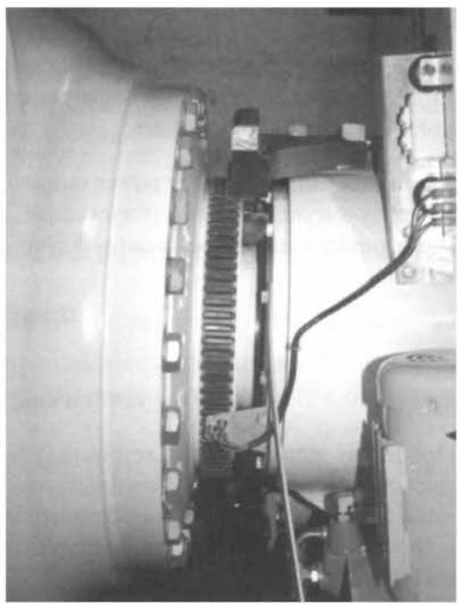
图 8.1 低速轴侧的传感器系统(三个接近传感器安装在齿轮箱前侧支架上， 记录主轴周缘转过的齿数, 为主控系统和安全系统提供独立的叶轮转速信号。 固定在轮毂上的法兰紧挨在齿的左侧)
(2)振动限位开关，当机组出现主结构性故障时振动开关发生动作。
(3)控制系统看门狗定时器中断。控制器应该有一个看门狗定时器，它可以重新设定每个控制器的时间步长。如果在规定时间内没有重新设置, 就表明控制器出现故障，安全链就要使风力发电机组停机到安全状态。
(4)操作人员按下急停按钮。
(5)发生主控制器不能控制的风力发电机组其他故障。
在有些情况下, 安全链系统可能包括不止一个电路, 如任意一个安全链触发通常都会导致变桨。但是, 它对于继电器可能是行得通的, 通过继电器断开发电机系统连接, 使之成为一个完全不同的电路而且没有特定的传感器。因此, 如果发生了某些与电气系统无关的故障, 发电机的刹车动作能够得到保护, 从而可以辅助停机。
8.2 闭环控制:问题和目标¶
8.2.1 变桨距控制¶
变桨距控制是最常见的控制风力发电机组吸收风能的方法。变桨距控制也会对所有由叶轮产生的空气动力载荷产生影响。
在额定风速以下时，风力发电机组应该尽可能地捕捉较多的风能，所以这时没有必要改变桨距角, 因为最佳桨距角并没有随风速改变。此时的空气动力载荷通常比在额定风速之上时小，因此，没有必要通过变桨距来调节载荷，尽管有些变桨动作在如下的解释可能会减少疲劳载荷。然而, 对于在额定风速以下的恒速风力发电机组来说,最佳桨距角由于气动效应会随着一定的变速比或者风速而发生微小的变化。在这种情况下, 桨距角由于风速的平均变化发生缓慢的改变 (不超过几度) 来保持最佳电力的产生。这同样适用于变速风力发电机组, 当它们以恒速在某个运行曲线运行时。
在额定风速以上时, 变桨距控制可以有效调节风力发电机组吸收功率及叶轮产生载荷, 使其不超出设计的限定值。然而, 为了达到良好的调节效果, 变桨距控制应该对变化的情况作出迅速的响应。这种主动的控制器需要仔细地设计, 因为它会与风力发电机组的动态特性产生相互影响。
塔架的动力特性是其中相互影响最大的一项。随着叶片攻角的变化, 气流对叶轮的作用力也会随之发生改变, 这就会导致风力发电机组塔架的振动。随着风速增加到额定值以上，为了保持恒定，转矩桨距角也随着增加，但是叶轮所受到的力将会减小。这就使塔架的弯曲度减小，塔架的顶端就会向前移动引起以叶轮为参照的相对风速的增加。空气动力产生的转矩进一步增加, 引起更大的调桨动作。 显然, 如果变桨距控制器的增益太高, 就会导致这个正反馈不稳定。因此, 在设计变桨距控制器时考虑风力发电机组塔架的动态特性是非常关键的。
在额定风速以下时, 桨距角设定值应该设定在能够吸收最大功率的最优值。 按照这种原则, 当风速超过额定风速时, 增加或减小桨距角都会减小机组转矩。增大桨距角，即将叶片前缘转向迎风方向，通过减小攻角来减小机组转矩，称为顺桨。 减小桨距角, 即将叶片前缘转向背风侧, 通过增大失速角来减小转矩, 使升力减小, 阻力增加，称为主动失速变桨。
尽管顺桨是更常见的控制策略，但是有些风力发电机组采用主动失速变桨的方法。向顺桨方向变桨要比主动失速变桨需要更多的动态主动性,一旦大部分叶片失速了就没有足够的变桨距调节来控制转矩。失速叶片变桨距会由于阻力的增加而导致较大的升力载荷。另外, 一旦叶片失速, 升力不再恒定, 所以疲劳载荷会很小。
失速控制的另一个问题是升力曲线斜率在失速区域的开始阶段是负的。例如, 升力系数随着叶片攻角的增加而减小, 这就会引起负空气动力阻尼振荡, 进而导致叶片弯曲模态的不稳定。对于定桨距失速控制的风力发电机组也存在同样的问题。
大多数变桨距风力发电机组都采用全翼展变桨距控制, 其桨叶轴承连接着轮毂。尽管不常见，但是也可以通过改变叶尖桨距、辅助翼、副翼、空气动力矩或其他装置来调节空气动力特性。这些控制策略会实现大多数叶片在大风时主动失速。 如果只改变叶尖桨距，那么就会很难找到合适的控制叶片外侧部分的执行机构，而且维护起来也非常困难。
8.2.2 失速控制¶
许多风力发电机组是失速型的，即叶片设计在高风速的时候主动失速而不需要任何变桨动作, 也就是说, 不需要变桨距执行机构, 尽管在紧急的情况下可能会需要空气动力刹车制动 (见 6.8.2 节)。
为了在合理的风速下达到失速控制，风力发电机组必须工作在接近失速的状态，远离变桨距的区域，因而导致在额定风速以下时功率系数较低。变速风力发电机组就克服了这一缺陷，为了获取最佳风能利用系数在额定风速以下叶轮转速是可变的。
为了使风力发电机组在大风情况下失速而不是加速，必须限制叶轮的转速。 在恒速风力发电机组中, 叶轮转速是通过发电机来限制的, 只要发电机的转矩小于限定转矩, 其转速就取决于电网频率。在变速风力发电机组中, 发电机的转矩随着输入空气动力转矩的变化而变化，由转矩决定着转速。为了实现叶轮的失速能力， 在高风速时变速风力发电机组提供了使叶轮减速的可能性。也就是说，风力发电机组可以在远离失速点的低风速情况下运行，提高了风能利用系数。然而，应用这种控制策略, 当有阵风吹向风力发电机组时不仅要通过增加载荷转矩来与风力发电机组产生的转矩相匹配, 而且还要通过其载荷的增加来使转速下降。这就失去了变速运行的优点，也就是它允许转矩平稳控制和功率超出额定值。
变桨距控制的优点是作为一种刹车手段，也就意味着失速控制现在很少用于大型商业风力机上。
8.2.3 发电机转矩控制¶
恒速(如直接连接)感应发电机产生的转矩仅仅由转差率来决定。随着空气动力转矩的变化，叶轮转速产生微小的变化，所以发电机的转矩跟随空气动力转矩的变化而变化。由此可见, 发电机的转矩不能主动控制。
然而, 如果在电网和发电机之间装有变流器, 那么发电机的转速就可以变化。 变流器可以主动控制发电机的转速, 以保证在额定风速以上转矩或功率输出的恒定。在额定风速以下，转矩可以控制到任意值。例如，为了保持最大风能利用系数而进行叶轮速度控制。
实现变速控制有多种方法。把发电机的定子通过变流器与电网相连就是其中之一, 变流器的额定值应该是风力发电机组输出的全功率。还有一种方法就是绕线式感应发电机的定子直接与电网相连, 而转子通过滑环和变流器与电网相连。 这就意味着变流器的额定值只有全部额定功率的一部分就够了, 尽管这部分越大所能达到的调速范围就越宽。
一个特殊的例子是变转差率的感应发电机，它可以通过控制与转子串联的电阻来改变转矩转速的关系。通过基于电流测量的闭环控制可以实现在额定值以上时保持转矩恒定, 在这个工作区可以有效地实现变速运行。在额定值以下它同普通的感应发电机一样(Bossanyi 和 Gamble, 1991; Pedersen, 1995)。
8.2.4 偏航控制¶
不管是上风向型还是下风向型的风力发电机组，通常都能平稳地偏航(见 4.11 节)。如果机舱可以自由偏航，那么风力发电机组会自然对风。但是，当通过对机舱偏航角度进行控制来获得最大风能时，可能会影响机组对风的准确度。通常需要偏航驱动，如启动偏航和电缆的解缆，也可以用于主动偏航的跟踪。自由偏航的优点是具有使偏航轴承不产生任何偏航运动。然而, 通常至少存在偏航阻尼, 导致轴承上的偏航运动。
事实上,大多数风力发电机组采用主动偏航控制。通过安装在机舱上的风向标产生偏航误差信号计算出偏航执行机构的给定信号。通常参考信号简单地控制偏航装置以一个较慢的固定速率顺时针或逆时针运动。偏航风向标信号应该取平均值, 尤其对于风向标在叶轮后面的上风向型风力发电机组。由于偏航系统的响应很慢, 简单的死区控制就足够了。当平均偏航误差超过一定值的时候偏航电动机启动, 启动一定的时间或机舱转动一定的角度后偏航电动机停止。偏航刹车通常用在风力机没有偏航，或者是正在偏航时，为了防止在偏航齿轮上出现载荷的频繁逆转, 这种逆转通常是在由于偏航时间其高速变化的特性所导致的。
有时用到更复杂的算法, 但是控制总是动作缓慢, 而且并不需要特殊的设计考虑。事实上, 快速偏航是没有必要的, 因为通常会导致较高的陀螺负荷。鉴于此, 偏航控制被列为整机运行状态控制器的一部分。偏航控制在待机时为主动模式, 以保持风力发电机组正对风向 (除去风向变化莫测的低风速时段)。
在大风的时候, 通过执行偏航控制调整空气动力功率是个例外, 可见 6.7.5 节的 Gamma 60 变速风力发电机组。这显然需要很快的偏航速率, 而且会在叶轮上引起较大的偏航载荷、回转和不对称载荷。这种调整功率的方法对于恒速风力发电机组来说太慢了, 甚至对于 Gamma 60 这种额定风速以上运行时速度变化范围非常大的机组也是如此。
可以使用独立变桨距控制来产生偏航时间从而代替偏航执行机构, 见 8.3.14 节。
8.2.5 控制器对载荷的影响¶
与风力发电机组在大风时功率调节和低风速时最优控制一样, 控制系统的动作会对机组载荷产生主要的影响。设计控制器时应该考虑到对载荷的影响，至少要保证不会因控制器的动作而导致过载。除此之外, 在设计控制器时, 还应该明确地把减小某些载荷考虑在内。
显然，减小某些载荷与前面提到的高风速时限制功率是一致的。例如，限制功率的输出与减小齿轮箱的转矩是一致的。然而, 在其他情况下也会产生冲突, 控制器的设计必然会与其他目标相折中。例如, 在输出功率控制和变桨距执行机构载荷之间要进行折中。执行机构容量越大，功率控制就越好。当然，在通常情况下， 通过降低能量捕获来降低载荷是可能的(在所有的载荷最小化以后风力机将停机), 但是经济最优通常意味着由于降低载荷而降低成本是合理的, 除非在发电的时候损耗很小或者几乎没有。
8.2.1 节所提到的变桨距控制与塔架的振动之间的相互作用是另一个非常重要的例子，因为塔架振动的幅度对塔架基本载荷产生主要影响。通过变桨距方法控制叶轮速度，如果控制越严格，塔架的振动可能会越大。叶片、轮毂及其他结构载荷会因变桨距动作受到影响。发电机转矩控制会对齿轮箱载荷产生重要的影响, 如下面所述。
8.2.6 定义控制器的目标¶
闭环控制器的基本目标通常定义得比较简单。例如, 变桨距控制器的基本目标就是在大风时限制吸收功率或叶轮转速。控制器也可以有多个基本目标, 如变桨距控制器或转矩控制器还可以用来实现低风速段的最大风能捕获。
然而, 由于控制器会对结构性载荷及振动产生主要的影响, 所以设计控制算法时把这些考虑进去是至关重要的。因此, 对一个变桨距控制器目标较完整的描述如下:
(1)在额定风速以下时，优化功率输出。
(2)在额定风速以上时，调整或限制空气动力转矩。
(3)减小齿轮箱转矩的尖峰。
(4)避免过多的变桨距动作。
(5)通过控制风力发电机组塔架的振动尽量减小塔架的基础载荷。
(6)避免加剧轮毂和叶片根部载荷。
尤其对于独立变桨距控制 (见 8.3.12 节), 这些目标中的最后一个应当被一个更加优先目标代替。
(7)有效降低叶轮和其他系统的载荷。
很显然, 这些目标有些相互之间存在冲突, 所以控制的设计过程不可避免地要进行相互权衡, 实现最优化设计。为此, 必须对各个目标进行量化。在通常情况下, 对目标精确量化是非常困难的, 因为载荷的改变不仅受各种部件成本的影响 (有时在很复杂的方式下), 而且还与各个部件的可靠性有关。即使权衡发电量和部件成本也不是简单的事,因为它还取决于风电政策制度、折扣率及了解未来售电的价格。因此,合理的控制器设计还需要一定的判断。
8.2.7 PI 和 PID 控制器¶
因为在接下来的几节中将涉及 PI 和 PID 控制器, 本节概括介绍 PI 和 PID 控制器。
比例积分(PI)控制器是在各种设备或过程控制中应用十分广泛的一种算法。 控制算法由两项求和得到:一项与控制误差成比例，误差是由参考值与实际值之差得到的; 另一项与控制误差的积分成比例。积分项保证了稳态时控制误差趋近于零一一如果不趋于零, 积分项会使控制作用继续增加。比例项使算法对快速变化立即产生量化的控制作用。
加入微分项的控制器也是非常常用的, 其中微分项与控制误差的变化率成正比,即所谓的 PID 控制器。根据拉普拉斯算子 \(s\) ,把 \(s\) 看成一个控制器是很有用的, 从测量信号 \(x\) 到控制信号 \(y\) 可以写成如下表达式:
式中, \({K}_{\mathrm{p}},{K}_{\mathrm{i}},{K}_{\mathrm{d}}\) 分别为比例、积分和微分增益。微分项的分母是一个低通滤波器, 要确保算法的增益不随着频率的增加而明显地增大, 那样会使算法对噪声信号十分敏感。令 \({K}_{\mathrm{d}} = 0\) , PID 控制器就成了 PI 控制器。
通常控制器的控制作用易受限定值限制。例如, 用于在额定风速以上控制功率的变桨距控制, 当功率降到额定值以下时桨距角就被限定在最优设定值, 不允许桨距角再进一步减小。在这种情况下，功率保持在额定值以下时，PI 或 PID 的积分项负值越来越大。当风速再次增大、功率超过额定功率时, 积分项开始向零增加，但直到接近零时才开始补偿比例和微分项。因此，桨距角会“停留”在设定的限定值一段时间，这段时间的长短取决于功率小于额定功率的时间，直到积分项再次增加到零为止, 这种现象被称为积分器失效。显然, 必须防止这种现象发生。可以通过当桨距角停止在限定值时禁止积分器作用来实现。称为 “积分器退饱和”，在 8. 6 节中将作更详尽的叙述。
关于 PI 和 PID 控制器的设计，包括增益的选择在 8.4 节将作更详细的介绍。
8.3 闭环控制:通用技术¶
本节重点介绍应用在风力发电机组中各种闭环控制器的基本原理, 设计闭环控制器算法的数学方法将在 8.4 节中进行介绍。
8.3.1 恒速变桨距风力发电机组的控制¶
恒速变桨距风力发电机组通常将感应发电机直接与交流电网相连, 所以其转速近似保持恒定。随着风速的变化，输出功率的变化与风速的立方成正比。在额定风速时，输出功率与风力发电机组的额定值相等，为了减小叶轮的空气动力系数并将功率限制在机组的额定值，叶片开始调节桨距角。通常的控制策略是根据功率误差来调节桨距角, 这里的功率误差定义为额定功率与电量传感器测得的实际发电功率的差。因此,其基本目标就是设计出使误差最小化的动态变桨算法。当然, 如上所述, 这并不是控制器的唯一目标。
闭环控制器的主要组成部分如图 8.2 所示。控制器通常采用 PI 或 PID 算法。
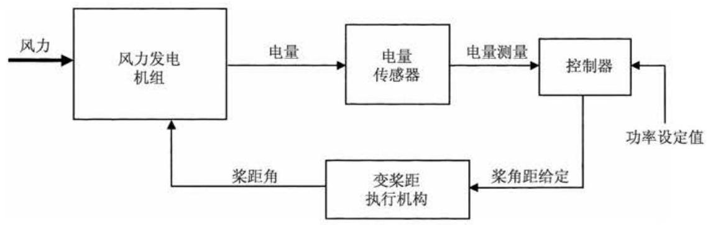
图 8.2 恒速变桨距风力发电机组闭环控制器
当发电机输出功率降到额定功率以下时, 桨距角给定值饱和于最优限定值, 使叶轮的空气动力系数最大。由于最优桨距角取决于叶尖速比, 在额定风速以下时, 随着风速的变化通过对桨距角的限定值进行微调, 就能够增加机组吸收的能量。 测得的发电机输出功率本身就是通过风力发电机组风速最可靠的直接体现 (将整个风电机组等效为风速计)。然而,与闭环动态特性相比, 桨距角限定值的变化比较慢。通过依据测量功率的平均值改变桨距角的限定值可以获得较好的性能。求平均值的时间常数将会很长, 这是因为内在风速变化得相对较慢。为了避免在低于额定风速时桨距角毫无必要的动作, 该时间常数要明显低于叶片穿越频率以及最低的结构频率(通常为第一塔架模式)。
8.3.2 变速变桨距风力发电机组的控制¶
变速风力发电机组通过变流器与电网频率相隔离, 可以通过发电机直接控制负载转矩, 所以风力发电机组叶轮转速允许在一定的范围内进行变化。变速控制风力发电机组经常提到的优点就是在额定风速以下时, 叶轮转速可以随风速成比例调节, 所以风速变化时可以维持最佳叶尖速比不变。在这个叶尖速比下, 风能利用系数 \({C}_{\mathrm{p}}\) 最大，也就是说，叶轮可以实现最大风能捕获。通常来说，具有同直径的变速风力发电机组可以比恒速风力发电机组获得更多的能量。事实上，完全实现理论上的最大风能捕获是非常困难的，部分原因是变流器有所损耗，部分原因是不能理想地跟踪优化 \({C}_{\mathrm{p}}\) 。
在最佳叶尖速比 \(\lambda = {\lambda }_{\mathrm{{opt}}}\) 时,机组空气动力效率系数最大,此时风能利用系数 \({C}_{\mathrm{p}}\) 达到最大值 \({C}_{\mathrm{p\left( {max}\right) }}\) 。由于叶轮转速 \(\Omega\) 与风速 \(U\) 成比例,功率随着 \({U}^{3}\) 和 \({\Omega }^{3}\) 增加,转矩随着 \({U}^{2}\) 和 \({\Omega }^{2}\) 增加。机械转矩如下式所示:
由 \(U = {\Omega R}/\lambda\) 得
因此,在稳态时,可以通过设定的发电机转矩 \({Q}_{\mathrm{g}}\) 达到最佳叶尖速比,以平衡机械转矩, 如下式所示:
这里 \({Q}_{L}\) 代表传动装置上的转矩损耗 (其本身是转速和转矩的函数),折算到高速轴侧。发电机转速为 \({\omega }_{\mathrm{g}} = {G\Omega }\) ,其中 \(G\) 是齿轮箱的变比。
转矩与转速的关系如图 8.3 中直线 \({B}_{1} - {C}_{1}\) 所示。尽管它描述的是 \({C}_{\mathrm{p}}\) 稳态时的解, 它也可以用于控制电机转矩给定值, 这个转矩给定值是所测发电机转速的函数。在大多数情况下，这是在额定风速之下控制发电机转矩的很好的方法。
变速风力发电机组在额定风速以下时，为了跟踪最大 \({C}_{\mathrm{p}}\) 值，应用式 (8.4) 的平方算法可以得到平滑稳定的控制。然而,当风速变化较快时,由于较大的叶轮转动惯量阻碍了转速较快的变化,使其不能跟上风速的变化,所以机组通常工作在 \({C}_{\mathrm{p}}\) 曲线峰值的两侧而不是在峰值上,导致平均 \({C}_{\mathrm{p}}\) 值较低。这个问题对于叶轮较重和 \({C}_{p} - \lambda\) 曲线具有较陡的峰值的机组情况会更严重。因此，在变速风力发电机组的叶片优化设计时，不仅要使 \({C}_{p}\) 峰值最大，还要保证 \({C}_{p} - \lambda\) 曲线适当的平缓向上。
通过控制发电机转矩可以使叶轮转速在需要时迅速变化,使机组工作在 \({C}_{\mathrm{p}}\) 曲线峰值附近。方法之一就是与转速加速度成比例修改转矩给定(Bossanyi,1994)。
对于刚性传动系统，忽略变流器的动态特性，转矩平衡方程为
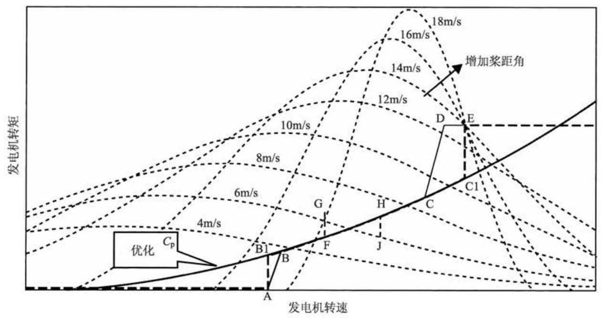
图 8.3 变速变桨距风力发电机组转矩转速关系曲线图
式中, \(I\) 为总转动惯量 (包括叶轮、传动装置和发电机); \(\Omega\) 为叶轮转速。因此,
有效惯量从 \(I\) 降到 \(I - {G}^{2}B\) ，使转速对风速变化的反应更迅速。
另一个可行的办法是根据可以测量到的量对风速进行估算，计算出最优 \({C}_{\mathrm{p}}\) 所对应的转速, 然后通过控制发电机转矩尽快达到所需转速。机械转矩可以表述为
式中, \(R\) 为风力发电机组的半径; \(\Omega\) 为转速; \({C}_{\mathrm{q}}\) 为转矩系数。如果忽略传动轴的变形, 则机械转矩的简单估算式为
式中, \(I\) 为总转动惯量。更精确的估算式应该把传动轴的变形等也考虑进去。由此可以估算出方程 \(F\left( \lambda \right) = {C}_{\mathrm{q}}\left( \lambda \right) /{\lambda }^{2}\) 为
由稳态动力分析得到函数 \(F\left( \lambda \right)\) ,就可以推导出当前的叶尖速比 \({\lambda }^{ * }\) 。最佳叶尖速比时的发电机转速可以由下面的公式计算出来:
式中, \(\widehat{\lambda }\) 为要跟踪的最佳叶尖速比。采用简单的 PI 调解器,由误差 \({\omega }_{\mathrm{g}} - {\omega }_{\mathrm{d}}\) 计算出电机转矩给定值,跟踪 \({\omega }_{\mathrm{d}}\) 。PI 调解器的增益越高, \({C}_{\mathrm{p}}\) 的跟踪效果越好,但是会使功率波动较大。对于特定的风力发电机组仿真的结果表明,在额定功率下可以得到 1% 的能量增益，但是会存在较大但可以接受的功率波动。
Holley 等(1999)用更复杂的模型证明了类似的结果，也表明最优的 \({C}_{\mathrm{p}}\) 可以使系统在额定功率以下时多吸收 \(3\%\) 的能量，但功率波动幅度为额定值的 \(3 \sim 4\) 倍，这是控制过程中无论如何都无法接受的。
由于这样大转矩的振动需要在功率输出上仅仅达到适度的增加, 通常是简单的采用基本的二次函数关系，如果叶轮惯性足够大不能被忽略时，可能会在公式中增加一些惯性补偿，如式 (8.5) 所示。
由于风力发电机组直径的增加会影响湍流的横向和纵向长度，所以风速作用在叶轮扫掠面积上的不平衡载荷会使实现最大 \({C}_{\mathrm{p}}\) 值变得更加困难。因此，在某一时刻，如果桨叶的一部分处于最佳攻角，那么其他部分就不会处于最佳攻角。
在大多数情况下，从切入风速到额定风速之间始终维持最大 \({C}_{p}\) 值不变是不切实际的。尽管一些变速系统能够进行全程转速控制，但是对于广泛应用于有限范围的变速系统中的双馈感应风力发电机组来说, 情况并非如此。这些系统只需要变流器来处理风力发电机组的一部分功率, 这样可以大大节省成本。这就是说, 在低风速，即刚超过切入风速时，必须使其工作在接近恒定的转速状态下，此时叶尖速比高于最优值。
在运行范围的另一端, 通常把转速限制在某个水平上, 这个水平一般是由空气动力的噪声信号所限制的，它能达到稍低于额定风速的某个速度。在达到额定功率以前，使转矩比额定值高些，尤其是在恒转速时是很划算的。图 8.3 所示为转矩转速的轨迹线，在下面会有更详细的阐述。对于安装于噪声敏感区域的风力发电机组,应该设计在达到额定功率之前沿着最优 \({C}_{\mathrm{p}}\) 曲线工作。对于相同的额定功率，转速越高，就意味着转矩和载荷越低，但是不平稳载荷却很高。这种策略也许会适合于海上风电场。
8.3.3 变速风力发电机组的变桨距控制¶
一旦达到额定转矩, 负载转矩就不会再增加, 所以转速就开始增加。然后, 应用变桨距控制来调节转速,并保持负载转矩恒定不变。通常应用 PI 或 PID 调节器就可以满足要求。在有些情况下, 要对转速误差应用陷频滤波器来处理, 以防止过度的变桨距动作。例如, 传动链转矩频率。
调节叶轮转速时变桨距控制不是保持转矩给定值恒定，而是通过以测量转速为依据反比例调节给定转矩, 以实现保持输出功率恒定。假设变桨距控制器能够实现使转速保持在设定点附近, 那么这两种方法就没有什么区别。通过增加转速来减小负载转矩会对变桨距控制器的稳定性稍有影响, 但是这个影响通常不严重, 并且假设齿轮箱转矩和叶轮转速变化不受太大的影响的话, 从电能质量和电压闪变的角度来看，恒功率输出的方法还是比较有吸引力的。
8.3.4 转矩控制和变桨距控制间的切换¶
实际上, 噪声、载荷或其他设计的限制使其在相对较低的风速时就会达到允许的叶轮最大转速。随着风速的进一步增大，为了捕获更多的风能，需要增大转矩和功率, 而保持转速不再增大。最简单的策略是采用转矩-转速斜线控制, 即图 8.3 中的直线 \({CD}\) 。一旦到达额定功率或额定转矩值,就应用变桨距控制将叶轮转速维持在额定值上。为了防止转矩和变桨距控制器相互干扰, 变桨距控制器的转速设定点在图 8.3 的 \(E\) 点设定的较高。如果 \(D\) 点为转速设定点,那么一旦转速暂时低于 \(D\) 点,在额定风速以上会出现固定的电压跌落。由于变桨距和转矩控制器都是要去控制转速,所以变桨控制器会在额定值以下动作。
如果能够将图 8.3 中的转矩转速轨迹线 \(A - B - C - D - E\) 改成 \(A - {B}_{1} - {C}_{1} - \; E\) ,那么机组性能会有很大的改善。风力发电机组会在很宽的风速范围内工作在最优 \({C}_{\mathrm{p}}\) 附近，比同样最大工作转速时吸收更多的能量(Bossanyi,1994)。垂直段 \(A - {B}_{1}\) 和 \({C}_{1} - E\) 可以参考在设定点 \(A\) 或 \({C}_{1}\) 点的转速误差通过 PI 调解器来获得转矩信号。恒转速和最佳 \({C}_{\mathrm{p}}\) 值运行之间的过渡过程一般通过应用 \({C}_{\mathrm{p}}\) 最优曲线的工作点 \(A\) 或 \({C}_{1}\) 点作为 PI 控制器的上限值或下限值处理。测量转速在 \(A\) 点和 \({C}_{1}\) 点之间时,设定点也在 \(A\) 点和 \({C}_{1}\) 点之间。尽管在设定点的步长改变了,设定点的过渡过程还是非常平稳的,因为过渡过程的前、后控制器在 \({C}_{\mathrm{p}}\) 最佳曲线的限制下将达到饱和。
为了避免转速运行于叶轮穿越频率附近，上述逻辑可以扩展应用到运行速度范围之外, 如可以通过引入额外的转速设定点及其与其他设定点的逻辑切换来避开塔架共振频率,如图 8.3 中的直线 \({FG}\text{ 、 }{HJ}\) 所示。当转矩给定值超过 \(G\) 点一定的时间后，设定点的变化率就会平稳地从 \(F\) 点过渡到 \(H\) 点。然后，当其持续降低到 \(J\) 点以下后,设定点的变化率会恢复为原值。
转矩控制 PI 调节器的另一个优点是可以控制系统的一致性。控制较陡的斜坡(图 8.3)时会很困难，因为转矩给定沿斜坡上下变化很大。另外，PI 控制器能够达到想实现的“柔和”水平。对于高增益，速度会紧紧地控制在设定点附近，需要较大的转矩波动。低增益可以实现较好的转矩特性，但速度却在设定点附近有较大范围的波动。
为了把 \({C}_{1}\) 点作为转矩和桨距控制的速度设定点，有必要对它们进行解耦。方法之一就是设置切换逻辑, 即保证在同一时间, 只有一个控制环处于激活状态。因此, 在额定值以下, 控制转矩控制是激活的, 而变桨距给定值是固定在最优限定值上。这样可以通过非常简单的逻辑完成，尽管有时会出现控制器工作在 “错误” 模式下。例如, 在风速稍低于额定风速, 但是风速变化很快时, 在转矩设定值达到额定转矩之前对叶片进行变桨距控制是有用的, 否则在开始控制加速之前转矩很可能会超过额定值, 而且还会导致机组过速。
更合适的方法是同时运行两个控制器, 为了能使它们耦合在一起, 当在远远超过额定风速以上或以下时使其中一个或另一个控制环饱和。因此, 在大多数时间里还是只有一个控制器处于激活状态, 但是在接近额定点时, 它们可以建设性地相互作用。
一种有用的算法是在 PID 控制器中, 除了引入转速误差, 同时还引入转矩误差项。在额定值以上, 由于转矩给定值饱和在额定值, 转矩误差为零, 但是在额定值以下, 转矩误差为负值。积分项会使桨距角给定值偏离最优限定值, 防止变桨距控制器在低风速时发生动作, 而比例项在风速增加很快时, 有助于在转矩达到额定之前启动变桨。
运行在额定风速以上时必须防止转矩给定值降低，有效的办法就是用“棘齿” 防止桨距角不在最优限定值时转矩给定值降低。这也能使功率在额定风速附近平稳输出，用叶轮的机械能来避免瞬时的功率降低。
引入了另一种方法, 使两个控制回路中的偏置项与速度误差分离, 有效地更改了始终活跃于两个回路的预定值。当转矩小于额定值时, 变桨距控制器朝向一个更高的速度预定值，迫使桨叶朝向最佳位置。当转矩达到额定值时，预定值下降到标称值，因此，变桨距控制逐渐发挥作用。当桨叶位置上升到最佳值以上时，变桨距控制器的预定值会下降，从而迫使桨叶上升到额定功率范围。当桨叶再次下降时, 变桨距控制器的设定值会上升回标称值, 使得变桨距控制器恢复其职责直到桨叶到达最佳位置，并且当桨叶下降到较远距离时，变桨距控制器的设定值会重新上升以保持桨叶达到最佳位置范围。设定值的变化与所引入的具有恰当时间常数的一阶滞后控制回路是无关的。时间常数越短, 越适合于使设定值增加而不是下降。 这有助于防止超速, 同时能防止桨距角在阵风中急剧下降, 因为这会导致不必要的塔尖振动。
8.3.5 塔架振动控制¶
对于失速和变速风力发电机组, 塔架振动与载荷对变桨距控制器的影响正如 8.2.1 节中所介绍的那样, 是设计控制算法的主要限制因素。塔架的前、后振动是很弱的阻尼振荡, 展示了很强的谐振响应, 即使是在风速很小的时候也可以保持较高的水平。响应的快慢取决于阻尼的大小，即来自于叶轮的有效机械阻尼。变桨距控制动作可以调整该模式下的有效阻尼的大小。因此，在设计变桨距控制器时， 避免进一步降低已经很小的阻尼是很重要的, 如果可能的话, 应该尽量使其增大。
在 8.4 节中介绍了变桨距控制器的算法设计, 包括 PID 增益的选择和为改善控制器总体性能的辅助项的选择, 用于实现增加塔架的阻尼, 并介绍了现代控制方法, 如最优状态反馈。这种技术有助于在速度或功率控制 (通过调节平面内载荷实现)和塔架振动控制(取决于面外载荷的修正值)间的竞争方面实现最佳匹配。
然而, 这里只有一定的转速或功率测量信号。状态观测器, 如卡尔曼滤波器 (见 8.4.5 节), 可以通过测量信号来区别是风速变化还是塔架动作产生的影响。 同时, 也可以通过安装在机舱上的振动加速度传感器来增加控制器的信息, 提供一个塔架前后振动的直接测量信号。通过使用这个附加的信号, 可以有效地降低塔架载荷, 而对速度或功率调节的效果没有影响。
塔架的动态特性可以用简单的二阶谐波阻尼系统近似进行描述。例如，
式中, \(x\) 为塔架的位移; \(F\) 为外加力,这里代表叶轮的推力; \({\Delta F}\) 为由变桨距动作所引起的附加应力; \(M\) 为等价于塔架的模态质量; \(K\) 为模态的刚度系数,如塔架频率为 \(\sqrt{K/M}\mathrm{{rad}}/\mathrm{s}\) 。阻尼项 \(D\) 很小。如果 \({\Delta F}\) 与 \(- \dot{x}\) 成正比,则可以明显增加有效阻尼振荡。显然, 测量加速度要比测量速度容易, 因此, 通过对塔架加速度的积分来推出速度的变化。为了得到精确的附加阻尼 \({D}_{\mathrm{p}}\) ,由应力对桨距角的偏微分 \(\partial F/\partial \beta\) 可以得到 \({\Delta F}\) 合适的增益,其中 \(\beta\) 为桨距角。
有时, 有必要在反馈中串联一个陷频滤波器, 用于限制来自引起塔架加速的其他元素不可预测的反馈。例如, 叶片穿越频率。超前-滞后或者其他回路成形滤波器可能也有助于调整反馈阶段，以保证最大阻尼。完整的动力学系统事实上要比式(8.12)所示的更加复杂。例如, 如同其他振动模式与塔尖的动力学特性有所联系一样, 变桨距执行结构的动态特性也应该被考虑进去。图 8.4 所示为带有加速器反馈项和没有加速器反馈项的仿真结果, 该仿真结果是在由 PID 控制器控制转速的情况下获得的。仿真的输入是实际的三维振荡风速。转速控制几乎没有受到任何影响, 而且尽管变桨距执行机构动作明显增加, 但需要的变桨距速率却变化很小。显然, 这种技术可以充分地增加塔架的阻尼, 几乎消除了谐振响应, 明显地降低塔架的基本载荷。尽管它需要一个加速计，也就是说，通常在过度振动情况中， 不管怎样都会引起停机。加速计相对来说是比较便宜的, 而且鲁棒性好, 可靠性高。
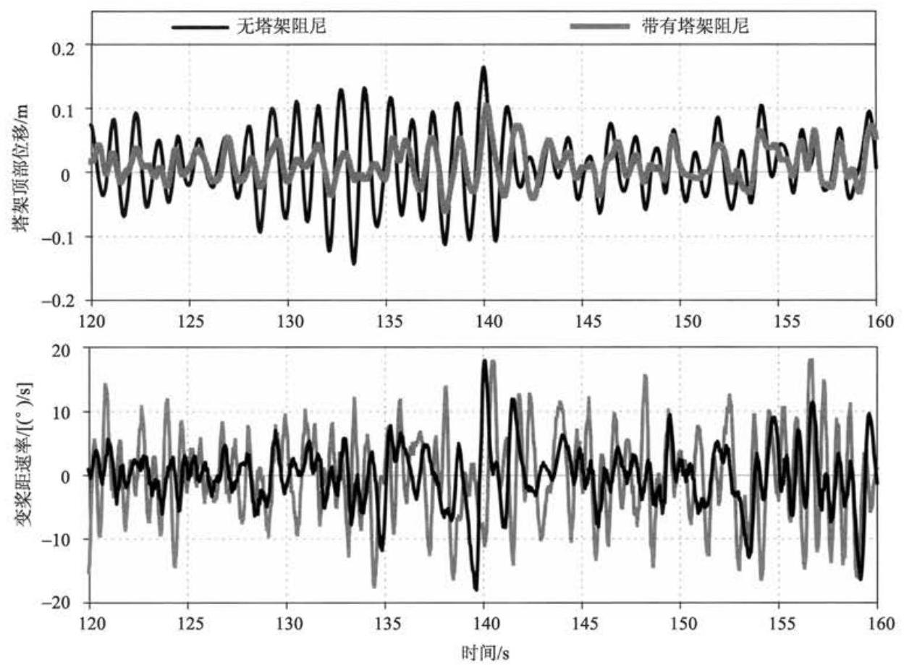
图 8.4 使用塔架加速计来控制塔架振动
塔尖阻尼作用的有效性已经通过现场试验结果进行了证明, 并且已经被 Rossetti(2004) 和 Bossanyi(2010)等发表。
由于随着桨距角移动到最佳位置时, 叶轮推力变化很大, 通常导致塔尖前后振荡的一个原因是在额定风速以上风速出现短暂的平静。桨叶的反应是通过迅速下降到最佳桨距角位置，从而导致叶轮推力的急剧下降以及随之引起的塔尖振动。 这种情况是可以通过阻止桨叶的迅速下降来避免。如果风速起来得很快，这是常有的情形，就会有一小部分的能量散失，可以通过很多种算法来处理。当桨叶可能达到最佳桨距角位置时, 对负变桨速率作了简单的限制, 尽管这通常会降低这个区域内速度调节的有效性。限制对称率会导致能量的损耗 (通过类似的降低正变桨速率限制的方法来恢复对称性是不可取的, 因为会导致瞬时超速)。这些不足在一定程度上可以通过限制向下桨距速率来减轻, 不过只有在负速率持续了一段时间以后才可以实现。然而, 有效的方法是使用动态改变最佳桨距角。每当桨距角高于最佳桨距角时, 最佳桨距角的限制就会增加, 但总是会保持在低于实际桨距的位置, 至少会有一定的余量, 所以在风速较高时, 它远远低于实际桨距角。动态变化的最佳桨距角位置允许缓慢的下降，因此，在风速暂停的时候，桨叶会下降到动态最佳桨距角位置。然后, 继续缓慢下降以保证达到真正的最佳桨距角位置, 如果风速暂停的时间延长的话。当动态最佳桨距角受限的时候，风电机组的转矩控制就会发挥作用，防止叶轮转速在短时间风暂停的时候显著下降。
塔架载荷通常由前后的振动主导，但是，侧端的振动在某些情况下是很明显的。例如, 运行在风浪很大的海上风电机组。侧端振动形成的阻尼比前后端振动形成的要小, 因叶轮在这个方向上的气动阻尼更小。当主波的方向来自侧端时, 侧端振动的激励需要被考虑, 并且在有些情况下, 它可能比前后端振动更显著。基本上，侧端振动的阻尼可以通过适当的控制发电机转矩提高，由于转矩的需求，增加一个用来测量侧端振动加速度的元件。此外, 关于转矩阻尼将在下一个部分 (Markou 等, 2009; Fischer, 2010)介绍。
8.3.6 传动系统的扭转振动控制¶
典型的传动系统由一个较大的叶轮转动惯量和一个较小的高速轴转动惯量 (主要是发电机和刹车系统)组成,二者可以视为由一个等价扭簧连接,扭簧代表轴间的形变与耦合及齿轮箱齿弯曲和一些软装置的形变。有时考虑扭转振动形式与第一级叶轮平面内变距工作状态的耦合是很重要的, 此时, 传动系统可以近似为三个惯量和两个扭簧 (Ramtharan 等, 2007)。有时考虑二级塔架两侧形式的耦合, 包括塔架顶部的旋转，也是很重要的。
在恒速风力发电机组中，感应发电机滑差曲线(见 7.5 节)像一个很强的阻尼器, 使转矩随着转速的增加而迅速增加 (见图 7.29)。因此, 传动系统的扭转形式存在很大的阻尼, 一般不会引起什么问题。然而, 变速风力发电机组工作在恒转矩的模式下只有很小的阻尼, 因为转矩不再随着转速的变化而变化。由于叶轮产生的气动阻尼非常小，因为叶片朝着面内的方向振动。轴跟联轴器上会有少量的构造阻尼, 同时有些阻尼来自齿轮箱, 不过这些阻尼只占临界阻尼的一小部分 (只有 1%)。在非常低阻尼下会导致齿轮箱有较大的转矩振动，抵消了理论上变速运行的优点和控制转矩的能力。
尽管可以人为地加入机械阻尼，如通过设计适当的橡胶垫或耦合器，但一般很难提供足够的阻尼, 当然, 随之而来的就是会增加相应的成本。另一个已经成功地应用在许多变速风力发电机组上的办法，就是调整发电机的转矩控制来提供阻尼。 在额定风速以上，不是给定一个恒定的发电机转矩(或采用恒功率算法时，转矩与转速成反比变化)，而是在转矩给定值基础上增加一个传动系统频率上的很小波动, 通过相位调整可以抵消谐振作用, 有效地增加阻尼效果。高通或带通滤波器的形式如下:
其中, \(G\) 是增益,作用在发电机转速的测量上能够用来产生辅助的波动。角频率 \(\omega\) 必须在阻尼振荡的频率附近。时间常数 \(\tau\) 可改变相位,并且具有高通滤波器的功能，有时可以用于补偿系统的时间滞后。根轨迹图 (见 8.4 节) 对于设计滤波器参数很有用。
尽管可以设计出很有效的滤波器，以便在很宽的峰值上产生频率响应，但是这会影响系统的总体性能，因为引入了低频时转矩和功率的变化。即使峰值较窄，也会有很大的频率响应以桨叶穿越频率的倍数来干扰系统，如 \(3\mathrm{P}\) 或 \(6\mathrm{P}\) 。在这种情况下，可以在式(8.14)所示的滤波器上叠加一个陷频滤波器。当然，如果谐振频率接近6P，那么谐振就会非常难控制，因为它会产生很强的激励响应。
图 8.5 所示是变速风力发电机组运行于三维湍流情况下的仿真结果。从图 8.5 中可见, 传动系统正在产生较大的谐振, 尽管发电机功率和发电机转矩是平稳的,但是齿轮箱却会受到严重的损坏。按上述原理引入阻尼滤波器后的效果由仿真图可以看出, 在没有增加发电功率波动的情况下几乎完全消除了系统谐振, 这是因为谐振的激励很小, 所以用于阻尼谐振的转矩波动实际上也非常小。
在很多情况下, 传动链的阻尼能够进一步提高, 通过利用代表扭转速度而不是发电机速度的输入信号, 扭转速度不同于发电机速度和叶轮速度 (与变速箱成比例的)。不过, 这需要测量两个速度, 低速轴传感器的分辨率有时特别欠缺, 需要升级。必须小心谨慎, 以确保所要求的两个信号的区别不容易受到噪声信号的影响。
这些扭转振动对于直接驱动系统来说谈不上是问题，在有些情况下，这样类型的阻尼滤波器甚至都不需要。
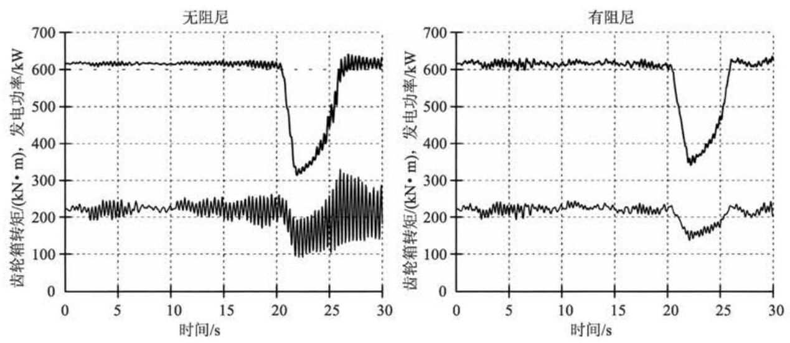
图 8.5 传动系统阻尼滤波器的作用
8.3.7 变速失速调节¶
图 8.6 显示了两个叶轮半径相同的风力发电机组的功率曲线, 其中一个是额定为 \({600}\mathrm{\;{kW}}\) 的恒速变桨距风力发电机组,另一个是同额定功率的恒速定桨距风力发电机组。在额定风速以上时, 为了将输出功率限制在额定值以下, 定桨距风力发电机组必须减小转速。因此, 尽管定桨距风力发电机组在风速较低时发电功率比变桨距风力发电机组稍大,但是在风速大于 \(8\mathrm{\;m}/\mathrm{s}\) 后会存在很大的输出损耗 (当然, 在实际中, 如果风力发电机组被设计为定桨距机组, 叶片的设计、硬度和叶轮转速都需要进行重新优化以便减小差异)。
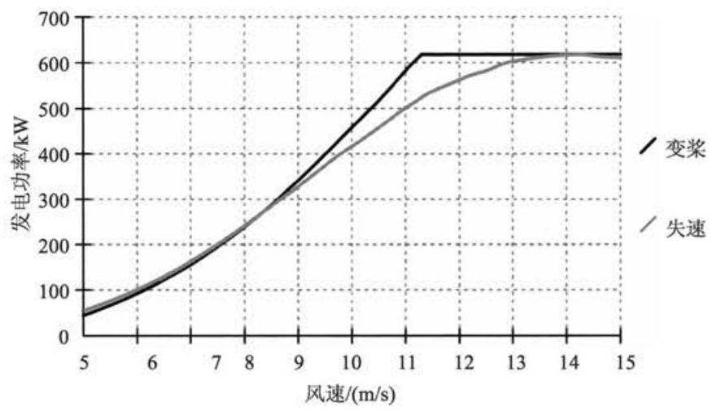
图 8.6 变桨距与失速控制比较
通过变速调节，可以实现机组运行于最佳叶尖速比直至机组发电功率达到额定值或转速达到最大值, 以避免机组出现上述的能量损耗。在额定功率时, 可以通过降低叶轮转速来实现机组的失速调节, 尽管目前这种方法在商业机型上很少出现。上述方法可以通过功率误差对发电机转矩进行闭环控制来实现, 允许风力发电机组精确地按照变桨距风力发电机组的功率曲线来运行。因此, 变速定桨距风力发电机组可以实现与变速变桨距风力发电机组相同的输出功率, 而且可以省去变桨执行机构。但是, 如 8.2.2 节中所述, 应用这种控制策略转矩和功率会存在明显的瞬变。在这种控制策略控制下, 变速机组可以获得平滑转矩和功率的优点是无法得到的。
在这种情况下, 有非常简单有效的控制算法, 如图 8.7 所示, 由两个嵌套的控制闭环组成, 分别为控制发电机转速的功率外环和控制发电机转矩的速度内环。 就像 8.3.4 节中所提到的,内环可以使用 PI 控制器。这和图 8.3 中的 \(A - {B}_{1}\) 和 \({C}_{1} - \; E\) 段采用的是相同的控制器,由于内环总是处于激活状态,所以在额定功率点控制器可以非常容易地实现控制模式的切换。外环采用 PI 控制器也可以达到很好的效果。
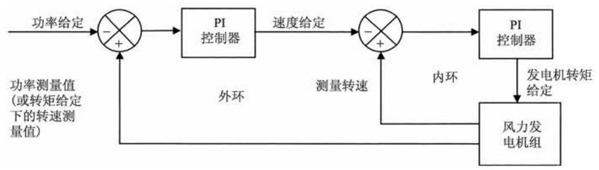
图 8.7 可变速定桨距机组的简单控制算法
8.3.8 可变滑差风力发电机组的控制¶
图 8.8 给出了可变滑差风力发电机组的运行特性曲线, 注意: 滑移速度代表着速度上升至同步以上(对传统电动机来说是个负滑动)。在低于额定值时, 发电机就像传统的感应发电机那样运行,具有如滑差曲线 \({AB}\) 所示的滑差和转矩的关系特性。一旦达到了 \(B\) 点,一个之前被半导体开关器件旁路的和转子相串联的电阻以几千赫[兹]的开关频率投入了运行，并且平均阻值可以通过改变占空比来发生改变。当平均电阻增加的时候, 发电机的滑差曲线就会发生改变, 其变化率与转子电路的总电阻成反比。图 8.8 给出了一个典型的例子, 其中转子电阻增加了 10 倍,将滑差曲线从 \({AB}\) 改变到了 \({AD}\) 。因此,通过控制电阻可以使发电机运行于阴影部分的任何一个地方。这个电阻的阻值通常通过一个闭环算法来进行调节, 它可以设法使转矩达到任何给定的值。例如, 这可以是一个以转矩误差作为输入, 开关的占空比信号作为输出的 PI 控制算法。
在实际中, 通常保持转矩给定为额定值, 这样发电机在到达额定转矩之前, 就会简单地按照滑差曲线 \({AB}\) 以一台传统的感应发电机的模式运行, 在到达额定转矩之后,就会像一个变速系统一样按照恒定的转矩曲线 \({BCD}\) 运行。如果速度超过了 \(D\) 点,转矩就会被迫再次增加。变桨距控制通常用来将转速调节至一个可以选择的给定值,如 \(C\) 点。 \(C\) 点的速度越高,在相同的输出功率的情况下就需要更多的机械输入功率,所以转子电路中损耗的功率精确地由滑差决定。因此, \(C\) 点的选择应尽可能地低,以减小对于散热设备的要求(就像随着风速的增加而增加的风力发电机组载荷)。但是,如果 \(C\) 点选择得太接近 \(B\) 点,当速度在参考点附近变化的时候,转矩会偶尔跌落于 \({AB}\) 斜线之下,导致在额定风速以上运行的时候输出功率的减小。 \({BC}\) 之间的距离可以根据叶轮的转动惯量和变桨距控制算法的响应来确定。 由于对于一个变速系统, 后者可以是一个 PI 或是 PID 算法。可以通过改变 PID 的变桨速率限制来实现当速度过于接近 \(B\) 点时使桨距角以最大速率向最佳角度调节，或者在转速过于靠近 \(D\) 点的时候使桨距角以最大速率顺桨。
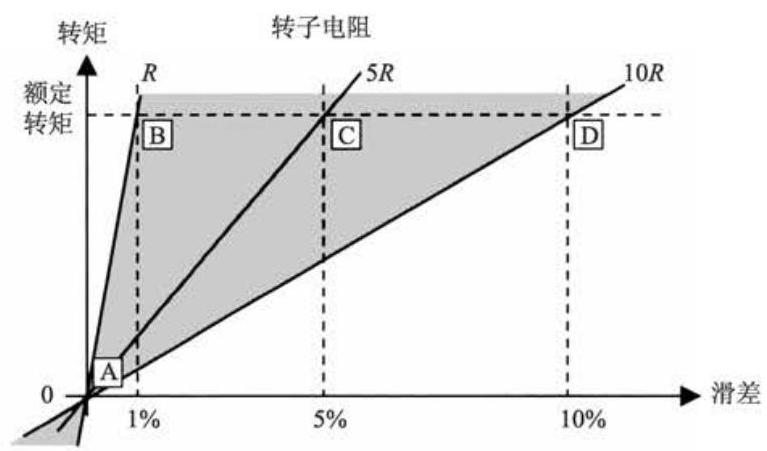
图 8.8 可变滑差风力发电机组运行情况
就像一个变速系统，需要能够像 8.3.6 节中所述通过修正转矩给定值来控制传动系统的扭转振动。然而, 为了达到这一点, 需要在相应的高频率的时候改变转矩的给定值，至少是传动系统典型振荡频率。 \(3\mathrm{{Hz}}\) 的 \(5 \sim {10}\) 倍。
8.3.9 独立变桨距控制¶
大型变桨距调节风力发电机组的每个叶片都有独立桨距调节器，因为通过它们可以为叶轮提供有效的独立气动制动系统。这就意味着不需要轴制动器, 除了一个小型的辅助制动器外, 因为如果其中的一个桨距调节器发生故障, 其余的调节器仍能使叶轮制动。由于每个叶片都具有独立的调节器, 所以可以向每个叶片发送不同的桨距要求, 并且这也可用来减少整个叶轮上的不对称气动载荷, 特别是对于疲劳载荷有很大的作用(Donham 等, 1979; Caselitz 等, 1997; Bossanyi, 2004)。
最简单易懂的观念是基于叶轮位置角的周期性变桨距控制, 导致每个叶轮上载荷的系统位置发生变化将产生很多影响, 特别是由于风速的变化引起的风切变以及塔架盲区等，以及由于偏航不正确、轴倾斜和上升流引起的攻角变化。原则上，可以施加一个方位角相关的变化到每个叶片桨距，从而补偿这些影响。
塔架盲区具有系统性和可预见性，但是当每个叶片穿越塔架时，任何影响都需要桨距需求中的一个快速短暂的“尖峰”，当然这可能有其他不良结果。轴倾斜也是可以预见的, 并且在某些情况下的上升流也是可能被预测到的, 不过, 这些只会影响攻角，而不会影响当地风速。偏航误动作也会影响攻角，这需要一个附加的传感器测量来进行补偿，因为不正确的偏航的大小与方向会不断变化。风切变会导致叶轮上风速的显著变化，并因此导致转动频率上(1P)叶轮载荷的巨大变化，但这种影响不是一直不变的, 需要一个或者多个额外的传感器检测到它。此外, 风切变只能被视为平均的效果，因为整个叶轮上风速湍流的瞬时变化可能有很大的不同。 实际上，最高风速会出现在叶轮盘上的任何地方，并不总是在顶部。
事实上，导致风力机叶轮上风速湍流变化的主导因素是非对称加载，这是由于大型叶轮尺寸与湍流漩涡的规模是相当的。因此，方位角依赖周期性变桨距控制往往不是很成功:当载荷的平均减少值应该可以通过平均风切变补偿时，与湍流的随机影响相比，这是微不足道的。对于运行于高度分流层的低湍流风力机来说，可能是个例外。
通常情况下，这些非对称载荷达到任何显著减少都需要一些额外量的瞬时湍流，使独立桨距角可以调整，以补偿这些影响。
一种想法是只在每个叶片前实际测量入射的风流，如沿着叶片使用一组皮托管, 或者在适当的位置使用测压孔, 然后调整每个叶片的桨距, 从而实现每个叶片上的测量。这些传感器已经被用来控制“智能型”叶片, 调节器沿叶片的跨度分布, 以改变其局部气动性能，如襟翼、副翼、变形的后缘，或空气射流改变的边界层流。 这样的想法是正在进行的研究课题, 距离商业应用还有很长的路要走。
一个更现实的想法是使用载荷传感器来测量在叶根的弯矩, 也可能在沿叶片的不同点处。这使得测量我们希望减少的载荷变得有意义, 为了实现全跨度变桨距控制,测量每个叶片的根部载荷似乎是有道理的,并使用这个测量值来调整反馈回路中每个叶片的桨距。以上这样的方法可以称为 “独立变桨控制”，尽管目前还没有明确的统一命名。
使用每个叶片根部载荷测量使其作为一种载荷预测装置, 通过它能够预测下一个叶片扫过原先那个位置时的情况。这在某种程度上为人们提供了一个对每个叶片控制进一步改进的期望, 其工作原理是由于湍流涡旋通过风轮时, 它们往往是足够大的，每个叶片将斜向通过相同的湍流结构，甚至在它通过之前，已经好几次。 因为每个叶片的桨距现在能够通过所有叶片载荷测量的值被计算出来, 这可以不再称为“单独”变桨距控制, 术语上称为“独立变桨距控制”可能会更合适。
8.3.10 多变量控制——风力发电机组控制回路的解耦¶
风力发电机组控制器是多变量的控制器, 具有多路输入和多路输出。
输入 (测量信号):
(1)发电机转速 (速度调节与传动链阻尼)。
(2)两个塔架加速度(塔架阻尼)。
(3)三个叶根载荷(针对三叶片风力发电机组)。
输出(需要的信号):
(1)发电机转矩。
(2)三个桨距角或变桨速率(针对三叶片风力发电机组)。
用现代控制方法例如 MIMO (多输入、多输出) 系统设计合适的控制器 (见 8.4.5 节)。然而, MIMO 系统有时会出现“变形”或转化为一组 SISO(单输入、单输出)系统。在这种情况下, 可以优化每个 SISO 系统的控制器用于与其他系统隔离。事实上, 这可以在某种程度上用于风力机控制器, 因此, 所有上述提到的控制回路都可采用经典的 SISO 方法设计 (见 8.4.1 节)。实际上, SISO 回路也不是非常独立的,但是它们之间的动态耦合可以足够小,使得在许多情况下,这是一个非常成功的方法。
上面的讨论表明，变桨距控制从转矩控制中解耦相对比较简单。事实上，把独立变桨距控制从统一变桨距控制中解耦也是可能的，统一变桨距控制为速度调节和塔阻尼提供了统一桨距需求, 而独立变桨距控制能够为每个叶片生成单独桨距需求增量, 从而可减少不对称叶轮载荷。桨距需求增量都是零均值的, 以这种方式统一变桨距控制不会受到影响。
独立风力机控制回路可以总结如下:
(1)使用转矩调速(使用发动机转速误差来计算转矩需求)。
(2)传动系阻尼闭环(使用发动机转速来计算转矩需求的修正值)。
(3)侧一侧塔阻尼闭环(使用侧一侧机舱加速度来计算转矩需求的进一步修正值)。
(4)调速闭环(使用发动机转速误差来计算统一变桨距控制需求)。
(5)前-后塔阻尼闭环(利用前-后机舱加速度来计算统一变桨距控制需求的修正值)。
(6)独立变桨距控制闭环(使用叶根载荷计算独立桨距需求增量)。
闭环(3)并不常用，但对海上风电机组来说，可能会变得更有意义。当与风向错位时，其能够被波浪作用激励。
这些闭环之间实际上是存在某些联系的。例如，回路(1)与回路(4)有时需要陷波滤波器调谐到传动链的谐振频率以抑制耦合，否则会影响控制行为本身。回路(4)和回路(5)原则上必须耦合，因为桨距角的任何变化都会影响扭矩和推力，但是因为回路(5)仅在有限的频率范围内时接近第一塔架频率，它通常可以独立调谐回路。用其中的一个或两个迭代能够得出更好的结果:首先调谐使用开环对象模型，然后相应的对象通过关闭这个循环而其他环路调谐等被重新定义。
闭环(6)仍然是一个 MIMO 回路，在叶片上具有多个输入和输出。然而，这个也能被解耦，正如下一部分中所解释的一样，利用叶片之间存在的对称性。
8.3.11 独立变桨距控制的两轴解耦¶
对于一阶，不对称风力场通过整个风轮扫掠面积可从线性化，并通过两个正交分量来描述, 如在水平垂直方向上随风速的剪切梯度。叶片载荷与风速紧密相关, 这种表现也能够被用于“叶片载荷场” (“叶片载荷场”可以被认为包括当地风速在叶片载荷上的三个分量的影响)。这种描述与叶片的数量以及其旋转速度无关, 并且其实际载荷可通过叶片在任何时刻观察到。可以认为是由叶片在某瞬时位置采样其载荷场的值。
此外, 变桨距作用需要补偿负载变化的现象也可被描述为覆盖扫掠面积的场, 并且在任何瞬间，每个叶片的桨距通过采样叶片瞬时位置的对应场即可获得。
因为任意场可通过两个正交分量来描述, 需要一个两输入、两输出的控制器从 “载荷场”产生桨距作用“场”。这也和叶片的数量无关。
因此,对于一个三叶片风轮来说,三个测得的叶根载荷可以用来计算瞬间载荷场的两个分量。这些又被用来计算“桨距场”的两个分量, 通过它可以计算出这三个独立的桨距增量。三个旋转叶片之间的转换关系以及两个(非旋转)场的分量与 Park 对于三相电机的转换关系一致 (Park, 1929), 每相的电流电压都与两个正交的概念,即 “直接” 和 “正交” 轴的电压或者电流相关。由于这个原因, \(d - q\) 轴转换是人们所熟知的。类似的概念也被用于直升机旋翼上，较常见的应用是 Coleman 转换。将 3 个旋转叶片根部载荷 \({L}_{1},{L}_{2},{L}_{3}\) 转换到非旋转 \(d - q\) 轴上的转换公式如下:
其中, \(\varphi\) 为方位角,上述过程的逆运算为
其中, \(\theta\) 代表在这种情况下的桨距角,上述转换关系还可以扩展至任意多个叶片 \(B\) , 计算公式如下:
对于一个两叶片风力机来说, 这个计算可以简化如下:
实际上，将方位角相位逆换到 \(d - q\) 轴是十分重要的，通过加一个偏移量到叶轮方位角补偿控制回路中控制器的步长及其他延迟。换句话说，桨距角可通过相位角计算而得, 如此便能使桨距的需求完全实现。
剩下的就是设计两输入、两输出的控制器[C]通过 \(d - q\) 轴的载荷来计算其桨距需求。
稳态响应中, 在载荷与桨距角之间存在一个清晰的一对一的对应补偿算法, 似乎是合乎逻辑的，因此，通过[C]可以对角矩阵来做支持说明，而且由于叶轮是对称旋转的，所以这两个对角关系应该是完全相同的。因此，设计控制器可归结为设计一个 SISO 控制器,并且使用两个独立的实例来分别说明 \(d\) 轴和 \(q\) 轴。由于在非旋转框架下的风力场的变化相对较慢，可以使用一个简单的、低带宽的 PI 控制器。
考虑到动态特性, 旋转采样率应该在叶片穿越频率上, 这也就意味着在这个频率上必须以一个确定的速度变化，这可导致变量 \({L}_{\mathrm{d}}\) 和 \({L}_{\mathrm{q}}\) 的相应变化。叶片穿越频率上通过一个陷波滤波器来滤波，因此，需要加入到每个 PI 控制器中。至于其他PI 回路, 可根据需要添加高阶滤波回路或者环路整形滤波器。
一旦考虑到动态因素, 叶轮就不再是对称的了, 这是因为其与塔架的动态特性的相互作用。原则上,这会导致 \(d\) 轴和 \(q\) 轴出现一些不对称,可能还会导致一小部分的动态耦合。因此, 原则上在设计耦合两输入、两输出控制器时会有一些优势 (Bossanyi,2003)。但实际上, 这些优势是很小的, 并且发现两个独立的相同的 SISO控制器工作得非常好。此外, 发现这些简单的控制器具有很强的鲁棒性, 它们表现出对风力机的动态变化以及载荷传感器的校准误差或偏移非常敏感。
逆 \(d - q\) 变换使相对变化较慢的 \(d - q\) 桨距需求转换为每个叶片的近似正弦波的独立变桨距需求。近似正弦波的频率为 \(1\mathrm{P}\) ，和叶片间的相位偏移，如三叶片的风电机组相位偏移度数应该是 \({120}^{ \circ }\) 。因此,这种控制形式有时适用于循环变桨距控制,但这并不完全正确。控制器动态响应于不断变化的载荷,因此,桨距的活动实际上就不是正弦变化的了, 尽管能够被视为幅度相位都在不断变化的正弦波形。 利用 PI 控制器很容易限制控制器的输出至一个极大值, 对应的是对正弦波形的幅度有个上限, 给定频率 1P 同样也决定了可能需求的桨距最大附加率。此上限值在慢风速中能够缓降至 0 ，当载荷小到一定程度时不能导致永久的疲劳损伤发生，此时可阻止任一独立变桨距的活动, 因此, 导致增加的变桨距活动将没有价值。如果在慢风速中其接近于统一变桨距需求, 同样还可利用其来确保桨距需求不会下降到低于任何物理意义上的变桨距限制。另一个应用是在统一变桨距控制中使用有效的变桨速率是很重要的, 可以阻止独立变桨距活动, 例如, 叶轮迅速加速至超速时(Savini 等, 2010)。
8.3.12 独立变桨距控制载荷降低¶
独立变桨距控制每一次旋转 (1P) 的主要影响是降低叶片平面内载荷的 1P 输出, 旋转轮毂或者轴力矩也是一样的。图 8.9 所示为叶根平面频谱图, 以及非独立桨距控制下的轴弯矩仿真图。实际上,在这些载荷情况下, \(1\mathrm{P}\) 频率的频谱峰值基本上被消除了, 通过在一个实际的风电机组上的现场测试证实了该影响 (Bossa-nyi,2010)。由于疲劳时 \(1\mathrm{P}\) 载荷分量占主要部分,载荷下降时显著疲劳便可获得: 典型的叶根平面弯矩 \({20}\%\) ，大多数情况下轴弯矩 \(\left( {{30}\% \sim {40}\% }\right)\) ，这是由于叶片之间的低频率的变化会抵消使得 \(1\mathrm{P}\) 尖峰甚至会更加明显。
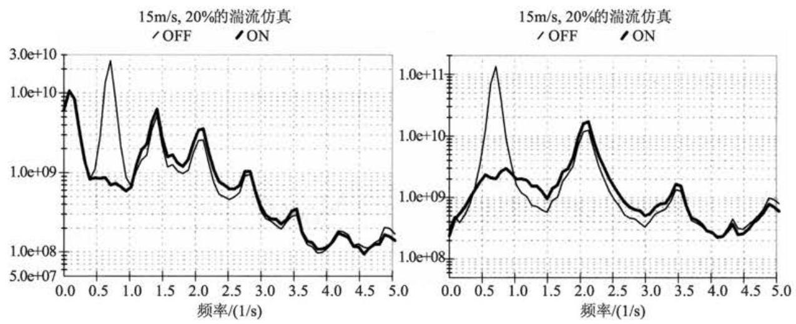
图 8.9 独立变桨距控制对叶片平面外旋转载荷的影响:叶根平面外力矩(左)和轴弯矩(右)
因此，在一个两叶片的风力机上，独立变桨距控制的使用代表着该方法可以很好地替换跷板型轮毂的使用(Bossanyi 等, 2009)。尽管它不会完全消除晃动力矩, 一个摇晃中心通常需要某种摇晃限制，它能重新引进一个力矩，并且几乎可以肯定的是，必须考虑摇晃终点止动装置影响的可能性，该影响可以产生巨大的载荷。
叶轮上 \(1\mathrm{P}\) 载荷分量在转换为非旋转参考系时,会导致载荷分量为 \(0\mathrm{P}\) 和 \(2\mathrm{P}\) , 因此,正是这些载荷分量可通过独立变桨距控制降低。所以机舱的低垂和偏航力矩会导致低频变化的消失, 这可能会显著降低峰值载荷— 图 8.10 所示的偏航力矩的影响, 偏航力矩可能在减少所需要的偏航的功率和载荷方面效益显著。点头力矩按照类似的方式降低。
在一个三叶片风力机上，非旋转载荷情况下没有显著的 2P 成分，因此，只有低频载荷的下降在这里是很重要的，疲劳载荷的主要来源是非旋转的 3P 成分，因此， 在很大程度上不会被独立变桨距控制影响。然而,对于两叶片风力机来说, \(2\mathrm{P}\) 是疲劳载荷的主要成分, 独立变桨距控制能够显著降低非旋转疲劳载荷, 这点同样经过现场测试所证实 (Bossanyi 等, 2010)。
然而, 即使是三叶片风力机, 有可能通过使用二次谐波独立变桨距控制降低非旋转疲劳载荷。将 \(1\mathrm{P}\) 作为一次谐波，二次谐波独立变桨距控制能够通过此方式准确实现。在旋转变换中，利用正弦和余弦函数的参数以 2 或 \(n\) 为第 \(n\) 次谐波叠加 (尽管实际中不值得使用高于二阶谐波)。二次谐波控制导致 \(2\mathrm{P}\) 桨距活动,因此, 旋转部分中任意 \(2\mathrm{P}\) 载荷分量减少,非旋转部分中的 \(1\mathrm{P}\) 和 \(3\mathrm{P}\) 载荷分量也会下降 (Engelen 等, 2005; Bossanyi 等, 2009)。因此, 在三叶片风力机上, 非旋转疲劳载荷中的主导 3P 分量通过该方法减少, 如图 8.11 所示。
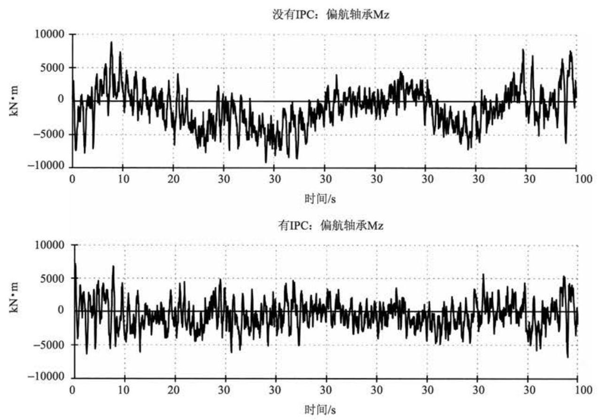
图 8.10 独立变桨距控制对三叶片风力机的偏航力矩的影响
任意数量的谐波可以一起使用，如图 8.12 所示，简单地通过并行控制回路表示。
8.3.13 独立变桨距控制的实现¶
独立变桨距控制需要额外的传感器, 因此, 确保它们都能可靠工作是十分重要的, 否则风电机组总的可靠性将会受到影响。传统的应变仪可靠性不高, 尽管在精密安装的前提下它们能够很好地工作。然而, 基于光纤布拉格光栅的应变传感器是有效的, 它们潜在的优势在于在该应用中是足够可靠的。脉冲激光光束直接传向光学纤维, 一纤细光栅将纤维“刻”在固定的位置, 通过该光栅反射出相同波长的光波。反射光的频率是可以测量的, 可通过在光栅的固定位置直接测量出应变力。 许多光栅可能同时刻入同一纤维中, 因此, 多个地方的应变力可通过一些额外的成本就能测量到。发送脉冲和检测到反射信号之间存在的时间延迟决定了每个光栅的位置。所需的部件都是基于通信技术的, 因此, 都很容易得到。此外, 特殊的光纤在风电机组的叶片结构上很容易作为 GRP 扭绞的一部分。
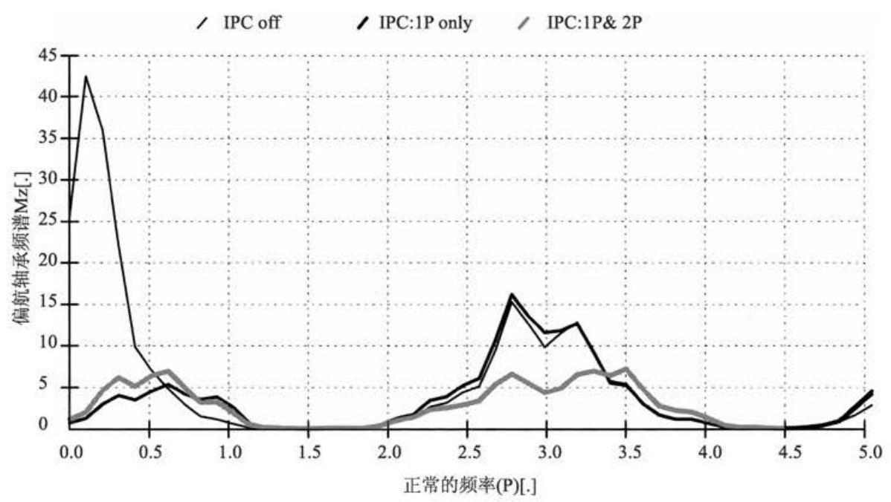
图 8.11 \(1\mathrm{P}\) 和 \(2\mathrm{P}\) 独立变桨距控制对非旋转载荷的影响
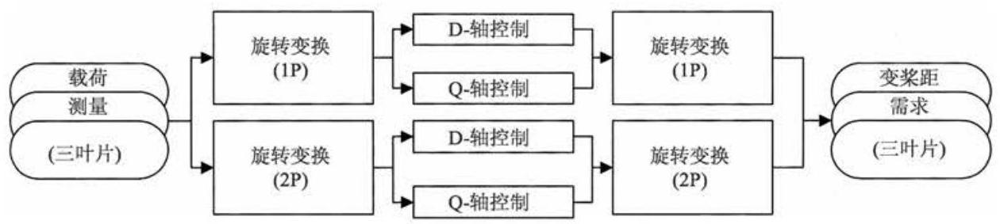
图 8.12 添加高次谐波的独立变桨距控制回路
在机舱或塔顶部利用轴弯曲传感器或其他传感器时 (Bossanyi, 2003), 独立变桨距控制同样可以实现, 但一般很难找到合适的传感器位置。另一方面, 如果使用了叶根传感器, 它们同样能提供轮毂扭矩或叶轮推力的测量。尽管当前并没有采用该方法, 但它们是同样有用的, 可作为上面所提到的其他回路的附加输入或替代输入, 如塔架的前后阻尼或者传动链的扭振。
如果应力传感器出现任何故障, 则对于独立变桨距控制来说, 有可能增加而不是降低载荷, 这可能很严重。一些故障很容易通过合理设计的传感器系统检测到, 但是有些故障是很难被检测到的, 除非通过控制器对信号进行分析, 如通过对比不同叶片的传感器信号。如果检测到或预测到任何故障, 独立变桨距控制 (能完全从其他控制回路中解耦出来)能够容易地关闭，无须通过停运风电机组，至少在有限的时间内或在一个较低的功率水平上直到故障排除。
当低于额定值时, 独立变桨距控制将会被逐渐取消, 由于负载已经很小, 因此, 附加变桨距活动可能是不合理的。原则上, 输出能量也会有较小损耗, 因为桨距角是不断移向最佳值一边的, 尽管实际中这部分的输出损耗是非常小的。当高于额定值时, 没有输出损耗, 因为桨距角已经远离了最佳位置, 并且统一变桨距控制回路确保额定输出能够保持。
显然，独立变桨距控制导致附加变桨距机构工作。附加变桨距活动的频率集中在 \(1\mathrm{P}\) 附近,随着风力机发展变大,变桨速率需求将会减小,因为当风轮直径增加时转动频率会随之降低。如果使用更高次谐波独立变桨距控制,如在 \(2\mathrm{P}\) ,同样会在该频率处引入附加变桨距活动。这是因为此时变桨距活动接近于正弦波，变桨速率需求最大值能够从最大幅值和频率估算出来,如果 \(d - q\) 轴需求同时达到上面的限制，此时应乘以 \(\sqrt{2}\) 。制动器所需的转矩并不比正常大(甚至可能会有小幅度下降，因为较低的叶根弯矩意味着较低的轴承摩擦力)，但因为变桨速率的增加，制动器工作起来会更加费力。这将影响制动器的额定热量。
桨叶工作的寿命会增加, 在设计变桨距轴承的时候必须予以考虑, 通常三倍左右(Bossanyi, 2003)。
尽管通过独立变桨距控制能够显著降低疲劳载荷, 但仍存在通过安全系统强制停机的情况下极限载荷增加的可能性，如果桨距角度数都有几度的不同，并且这种不同持续到桨距角倾斜至顺桨, 有时能够生产出设计良好的大型非对称负载。 在机组停机时独立变桨距控制也可能被移出,但是安全系统不可能允许如此复杂的操作。然而，将降低独立变桨距控制的幅度作为叶轮加速度的一个功能，这种情况能够有效地被避免, 因为当安全系统发生跳闸时, 桨距角可能彼此会非常接近 (Savini 等, 2010), 疲劳负载的降低是很难被影响的, 因为这些情况很少出现。
8.3.14 独立变桨距控制的扩展¶
独立变桨距控制另一个理论上的可能性是对于实际产生偏航载荷以响应偏航误差的测量，从而保持风力机正对着风，而不必使用偏航马达。偏航力矩很容易产生, 需要为 PI 控制器简单地设置一个非零设置点。然而, 偏航马达不可能被完全省去，因为当叶轮无法旋转时，需要它来偏航机舱，也可用来解缆等，因此，简单地使用零设置点的独立变桨距控制会更好, 以尽量减少偏航驱动器必须克服的偏航力矩。
\(d - q\) 轴载荷可能有助于推断出转子的平均偏航误差,可更好地导致偏航控制, 而不只是用风向标。
用如同偏航时刻一样的方式可以产生点头力矩, 通过设置非零设置点, 这可用于高阻尼前后塔架模式, 或有助于稳定悬浮式风力机(Namik 和 Stol, 2010)。一些侧一侧塔架振动的阻尼也可凭借独立变桨距控制来响应侧一侧加速度 (Fischer 等, 2010)。
8.3.15 独立变桨距控制的商业用途¶
独立变桨距控制现在开始用于商业风电机组上。改造现有的设计意义不大, 新商业设计得益于通过以下两种主要途径降低载荷:
(1)有的设计已经是提高功率后或是叶轮直径增大，增加独立变桨距控制同时保持载荷在现存的设计范围之内，以最低限度零部件的重新设计得到更高的能量捕获, 使成本发生最小的变化。
(2)风电机组设计从一开始就具有独立变桨距控制，从而降低零部件成本。 载荷边界的显著变化限定了整个设计重新优化的范围。
8.3.16 使用激光雷达的前馈控制¶
近几年，激光雷达(激光多普勒技术)系统的发展已经达到顶峰，这些设备能被有效地用于远程风速的测量中, 并且微观选址以及功率曲线测量方面的潜力很明显。利用机舱安装好的激光测速来扫描进入风电机组前面的风电场, 改善控制的目的已经在这些年中提出了很多次, 现在或许成为一种可能。
这些装置的花费仍然是巨额的, 但是经过证实, 用于大型风电机组时可能会有所降低，据发现，降低载荷或者增加能量捕获就能提供足够的效益。测量上游风力资源会为控制系统提供一些时间来完成预期行动。但在测量之前当风到达风电机组时, 更多的风已经变化了。然而, 通过预测阵风罕见的极限可能会有用: 极限载荷会降低，如穿越变桨距叶片。通过仿真获得的一些期望的结果已经被 Schlipf 等 (2010)作了报道。然而，接近风向的变化是很难检测出的，这是由于一些极限载荷的原因，因为只有横向风速分量才能被测量。由于同样的原因，在整个风轮前面距离非常近的地方扫描纵向风速是很困难的。
8.4 闭环控制:分析设计方法¶
很明显, 控制器增益的选择对于控制器的运行效果至关重要。如果全局增益过低，风力机就会在给定点附近震荡；增益过大，则会使系统变得不稳定，不适当的增益会引起系统结构上的较为敏感的响应。在本节中，会给出一些目前应用于风力机的实用闭环设计算法。例如，PI 和 PID 控制器的增益。当然，这里只会近似地给出一些有用的要点和提示。现在有很多关于控制理论和控制器设计方法的标准书籍，读者可以从中得到更多的详细参考信息，如 D'Azzo 和 Houpis (1981)、 Anderson 和 Moore(1979)以及 Astrom 和 Wittenmark(1990) 的文献。
8.4.1 经典设计方法¶
一个线性化的风力机动态模型是控制器设计的基础。它使很多种技术都可以用来快速地对控制算法的性能和稳定性进行评估。控制器在应用于实际的风力机之前应该使用具有三维扰动风速输入的详细非线性仿真来对其进行验证。
对额定风速以下的变速风力机，给定转矩的 PI 速度控制器会非常缓慢和柔和，线性化的模型也会非常简单。它必须包含传动链的动态旋转过程，而其他的动态特性通常并不重要。然而, 对于变桨距控制而言, 叶轮的气动特性以及一些结构的动态特性是很关键的。在设计变桨距控制器的线性化模型时, 至少应该包含以下的动态特性:
(1)叶轮和发电机的旋转。
(2)塔架的前后振动。
(3)功率或速度传感器响应。
(4)变桨距执行机构响应。
对于恒速系统来说, 发电机的特性也是必需的, 而对于变速风力发电机组来说, 传动系统的转矩特别重要。在各种各样的情况下, 需要对叶轮的空气动力学特性进行线性化描述。例如, 转矩的偏微分形式以及加入相应的桨距角、风速和叶轮转速。由于受变桨距控制具有强耦合塔架动态特性的影响, 这个插入项是很重要的。
图 8.13 给出了典型的线性化模型。对于这样的线性模型, 可以改变它的增益和其他参数, 从而可以迅速得到一系列的测试结果, 来帮助评估这些增益下的控制器性能。部分测试是开环测试, 它们通过打开闭环系统并将其应用到开环系统上, 如图 8.13 中的“✗”符号。其他的测试应用在闭环系统上。在对这些测试进行描述之前, 先陈述一些开环和闭环动态特性的基本理论。
图 8.14 给出了简化的通用模型, 其中风力机 (如图 8.13 从变桨距执行机构到传感器)被视为“模型”，用 \(G\left( s\right)\) 传递函数来代替。控制算法表达为控制器传递函数 \({kC}\left( s\right)\) ，其中 \(s\) 是拉普拉斯算子， \(k\) 是控制器全局增益。
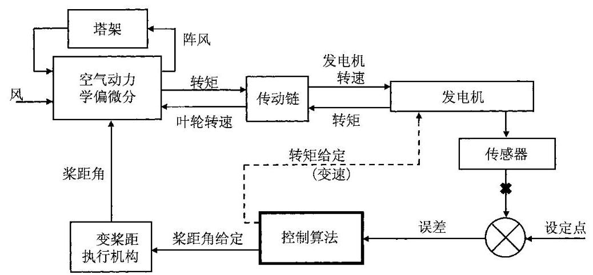
图 8.13 典型的线性化风力机模型
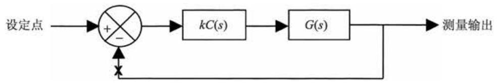
图 8.14 简化的风力机和控制器通用模型
现在开环系统可以由传递函数 \(H\left( s\right) = {kC}\left( s\right) G\left( s\right)\) 来表达。如果传递函数的输入记为 \(x\) ,输出记为 \(y\) ,则 \(Y\left( s\right) = H\left( s\right) X\left( s\right)\) ,其中 \(X\left( s\right)\) 和 \(Y\left( s\right)\) 是 \(x\) 和 \(y\) 的拉普拉斯变换形式。当在 \(x\) 处闭环,这个闭环的动态特性可以表示为
其中 \({Y}^{\prime }\left( s\right)\) 是闭环的拉普拉斯输出形式,可以另记为
换句话说，如果开环系统是 \(H\left( s\right)\) ，则闭环系统的动态形式表示为
现在线性化的传递函数可以表达为 \(s\) 的二次多项式的比。因此,对于开环系统, \(A\left( s\right) Y\left( s\right) = B\left( s\right) X\left( s\right)\) 以及 \(H\left( s\right) = B\left( s\right) /A\left( s\right)\) 。其中, \(A\left( s\right)\) 和 \(B\left( s\right)\) 为 \(s\) 的多项式,并且多项式 \(A\left( s\right)\) 的根给出了系统响应的重要信息。例如,一个一阶系统
用 \(x\) 来表示 \({y}_{1}\) 的一阶滞后响应,这个系统的传递函数可以表达为
其中, \(B\left( s\right) = 1\) ,并且 \(A\left( s\right) = 1 + {\tau s}\) 。
\(A\left( s\right)\) 的一个根为 \(\sigma = - 1/\tau\) ,其中式 (8.17) 具有 \(y = a + b{\mathrm{e}}^{\sigma t}\) 形式的解,并且 \(\sigma = \; - 1/\tau\) ,如果 \(\tau\) 为正,则这个解是稳定的。换句话说,也就是 \(A\left( s\right)\) 的根是负的。一个二阶系统解的形式为 \(y = a + b{\mathrm{e}}^{{\sigma }_{1}t} + c{\mathrm{e}}^{{\sigma }_{2}t}\) 。其中, \({\sigma }_{1}\text{ 、 }{\sigma }_{2}\) 是作为传递函数分母的二阶多项式的根。现在 \({\sigma }_{1}\) 和 \({\sigma }_{2}\) 可能为实数或是一对共轭复数 \(\sigma \pm \mathrm{j}\omega\) 。如果 \({\sigma }_{1}\) 和 \({\sigma }_{2}\) 同为复数，那么这些解是稳定的。在通常情况下，如果一个线性系统传递函数的分母多项式所有根的实部都为负, 则可以说这个系统是稳定的。这些根是系统的极点, 它们是当系统传递函数在 \(s\) 取无穷时的值。分子多项式的根是系统的零点,因为系统传递函数在这些点处为 0 。
现在以 \(A\text{ 、 }B\) 的多项式形式来重写式 (8.16),则有
此时,重新引入整个控制器的增益 \(k\) ,因此,有 \(B\left( s\right) = k \cdot {B}^{\prime }\left( s\right)\) 。很明显,当增益 \(k\) 很小的时候,闭环传递函数趋近于开环传递函数 \(k{B}^{\prime }/A\) 。尽管如此,当增益大的时候极点将会朝向 \(B\) 的根。换句话说，如果增益由 0 增大到无穷，闭环系统的极点将会从开环系统的极点移动到开环系统的零点。它们在复平面中沿着复杂的轨迹进行移动，这个轨迹的图像叫做根轨迹图。这样非常有助于选择反馈增益 \(k\) 。这个增益的选择要使所有的闭环极点位于平面的左半侧，使系统达到稳定且具有很好的阻尼。对于一对位于 \(\sigma \pm \mathrm{j}\tau {\varepsilon }^{j} = r{\mathrm{e}}^{\mathrm{j}\theta }\) 的极点，阻尼因子由 \(- \cos \theta = - \sigma /r\) 给出，如图 8.15 所示。
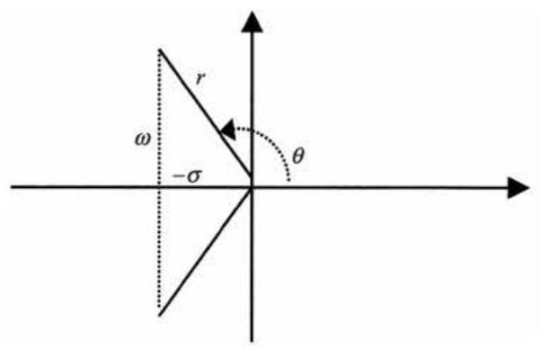
图 8.15 复数极点的阻尼比
图 8.16 给出了变速变桨距风力发电机组控制器的根轨迹图的例子。当增益上升的时候,闭环系统的极点 \(\left( +\right)\) 从由 0 反馈增益决定的开环极点 \(\left( x\right)\) 移动到开环零点 (实际中的极点数目通常会多于零点数,“丢失”的零点通常认为在以无穷远为半径的圆上)。在这个例子中,增益的选择尽可能使弱阻尼塔架极点 \(\left( B\right)\) 的增益最大化, 再增大增益就会加剧塔架的振动, 最终会由于极点穿越了虚轴而导致不稳定。在选定的增益处,系统的极点 \(\left( A\right)\) 会得到很好的阻尼, \(C\) 处的极点会产生变桨距控制器的动态特性。尽管更大的增益会导致不稳定, 它们仍然会得到明显的阻尼。
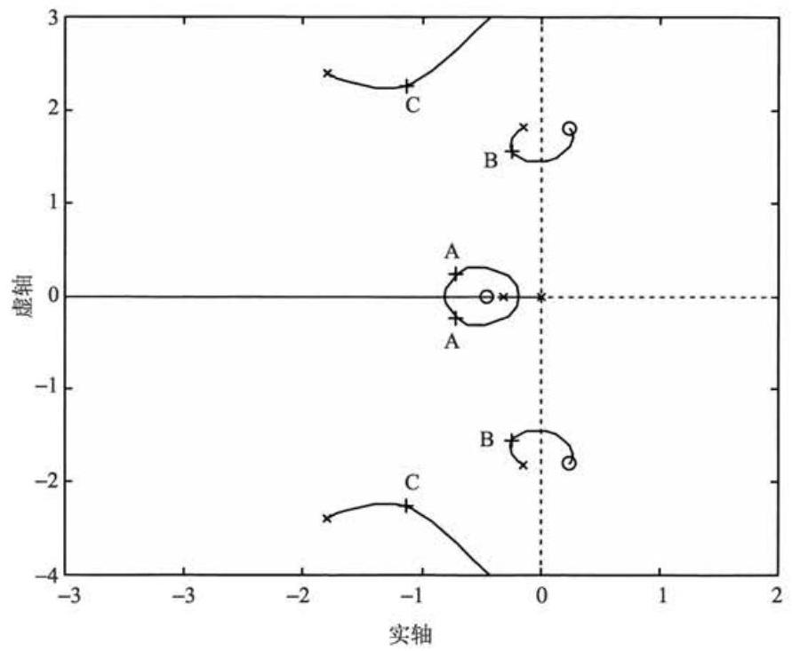
图 8.16 根轨迹图例
尽管根轨迹图会帮助选择系统的全局增益,但只有在控制器的其他参数都已经固定下来的情况下，才可以进行计算。一个PI控制器 \(\left\lbrack {{k}_{\mathrm{d}} = 0\text{ 情况下的式 (8.1) }}\right\rbrack\) 只由两个参数来决定,即 \({K}_{\mathrm{p}}\) 和 \({K}_{\mathrm{i}}\) 。它的式子可以重写为
其中,积分时间常数 \({T}_{\mathrm{i}} = {K}_{\mathrm{p}}/{K}_{\mathrm{i}}\) 。一旦 \({T}_{\mathrm{i}}\) 决定了,就可以使用根轨迹图来选择 \({K}_{\mathrm{p}}\) ,但是根轨迹图在不同的 \({T}_{\mathrm{i}}\) 下具有不同的形状,而且每次使用根轨迹图来选择 \({K}_{\mathrm{p}}\) 的时候都需要重复计算 \({T}_{\mathrm{i}}\) 的值,直到取得下面列出的标准中合适的值为止。 在 PID 或其他更复杂的控制器中需要选择两个以上的参数，这就使得必须通过其他的方法来确定参数，尽管通常可以使用根轨迹图来选择最后的全局增益。
参数的选择通常是一个迭代的过程, 通常使用一个给定的误差, 并且在每次迭代中都需要对得到的控制器进行估计。有价值的性能评价包括以下几个部分:
(1)通过开环频率响应计算增益和相角裕量，指出闭环系统现在的稳定裕度是多少。如果裕量太小, 则这个系统会趋于不稳定。当开环系统对于达到单位增益时具有 \({180}^{ \circ }\) 的相位滞后,则系统会变得不稳定,相位裕量给出了实际系统的开环系统在单位增益时的相位和 \({180}^{ \circ }\) 之间的差值。尽管没有标准的规定,通常推荐 \({45}^{ \circ }\) 的相位裕量。类似地,增益裕量为相位滞后 \({180}^{ \circ }\) 的开环增益值,推荐至少几分贝的增益裕量。
(2)穿越频率是开环增益为单位增益时的频率，是一个衡量控制器的很有用的量。
(3)闭环系统的极点位置指出了扰动是如何得到阻尼的。
(4)闭环阶跃响应，如系统对于风速的阶跃响应表明了控制器的有效性。例如, 变桨距控制器进行调整时, 叶轮转速和功率上的偏差应该迅速平滑地变为 0 , 塔架的干扰应该得到很快的阻尼,并且桨距角应该平滑地改变为新的数值, 并且不会产生较大的超调和振荡。
(5)闭环系统的频率特性也给出了一些有用的结果，如在变桨距控制器中:
(i)当低频率时，从风速到叶轮速度或电磁功率的频率响应进行衰减，因为低频率时的风速扰动可以被控制器消除。
(ii) 在高频率时, 从风速到桨距角的频率响应必须进行衰减, 并且在一些类似于叶片穿越频率或是变速系统传动链的共振频率等关键频率处的频率响应不能过大。
(iii) 从风速到塔架摆动速度的频率特性在塔架的共振频率处不会有太大的峰值。
通过以上方法的检验, 再加上一点实际经验, 可以很快地将其转换为在实际中应用的控制器。
8.4.2 变桨距控制器的增益规则¶
在功率接近额定值的时候, 由于选择了使输出功率最大的精确的桨距角, 由空气动力产生的转矩对桨距角之间的敏感性是非常小的, 因此, 比起高风速的时候, 这里就会需要更高的控制器增益。在高风速时, 桨距角的很小变化就会对转矩产生很大的影响。在通常情况下,转矩会随着桨距角的变化而几乎成线性化的改变, 因此, 可以通过改变控制器的全局增益使其与桨距角成反比例线性关系变化, 以便补偿转矩的波动。这样, 根据运行点对控制器的增益进行的调整就称为增益规则表。尽管桨距角的变化以不同的方式插入了关系式，并且由此对塔架的动态特性造成的影响会和变桨控制器产生很强的耦合，所以很可能需要进一步修改增益规则, 来确保在所有风速下变桨距系统都会有很好的性能。
因此, 在额定风速和切出风速之间的几个不同运行点上建立相应的线性化模型是很重要的, 并且需要选择一个增益规则来确保以上的性能调整在全范围内都可以令人满意。
对于主动失速控制器来说, 桨距角在工作点处不会有太大的改变, 可能不会需要增益调度, 但是如果需要的话, 可能必须使用一个直接的风速函数, 而不是桨距角函数。
8.4.3 在控制器中加入更多的项¶
通过加入附加的项, 在一个特定的频率范围内进行修正, 很可能会对基本的 PI 或 PID 控制器的性能有所改善。
例如,一个变桨控制算法很可能在很大程度上会使较多的变桨执行机构动作以很高的频率响应控制器的指令, 这不仅对于控制风力发电机组没有益处, 并且可能会对运行产生不利的影响。如果一些用于设计风力发电机组的动态情况没有被考虑到线性模型的建模中, 这种情况就有可能会发生。这样的一个例子是变速风力发电机组传动链中的扭转共振, 影响发电机转速的测量进而会影响到变桨距控制器, 使变桨动作频繁而没有任何益处。另一个可能引起的问题是变桨距控制响应一个外部主要频率, 如叶片穿越频率。利用和控制器相串联的低通滤波器当然会减小高频增益, 引起的低频相移会明显降低控制器的全局性能。为了防止在一些给定频率处产生过多的控制动作, 可以加入与控制器串联的陷频滤波器来解决这个问题。一个简单的二阶陷频滤波器可以滤除特定频率 \(\omega\) ,其传递函数为
其中，阻尼比 \(\zeta\) 表现了这个陷频滤波器的宽度或强度，它应该增加至使特定频率上出现明显的滤波效果为止，并且在更低的频率上不会对控制性能产生过大的影响。 另一个有用的滤波器是超前相位或是滞后相位滤波器:
它会增加频率 \({\omega }_{1}\) 和 \({\omega }_{2}\) 之间的开环落后相位 \(\left( {{\omega }_{1} < {\omega }_{2}}\right)\) ,或者当 \({\omega }_{1} > {\omega }_{2}\) 时减小它。 相位领先有时有助于提高稳定裕量。开环增益和相位图可以用于帮助选择 \({\omega }_{1}\) 和 \({\omega }_{2}\) ,一个 PID 控制器可以被重新表示为一个 PI 控制器和一个相位超前或滞后滤波器串联的形式。
一个通用的二阶滤波器具有以下的形式:
有时会有助于修正特定区域内的频率响应特性。当 \({\omega }_{1} = {\omega }_{2}\) ,并且 \({\zeta }_{1} = 0\) 时,这就是一个陷频滤波器,就像上面描述的那样。当 \({\zeta }_{1} > {\zeta }_{2}\) 时,这个滤波器具有带通的效果,这可以用来增强某一特定频率下的控制动作。 \({\omega }_{1}\) 和 \({\omega }_{2}\) 的区别还在于高通和低通的影响,因为高频增益接近于 \({\left( {\omega }_{2}/{\omega }_{1}\right) }^{2}\) 。
根轨迹图有助于研究上述滤波器的效果。根据经验, 通过特定的方式配置滤波器的零点、极点对于复数的影响是可以预测的。这种技术可以帮助观察如何将一对使结构产生谐振的弱阻尼极点配置到远离虚轴的位置，从而增加系统的阻尼。
8.4.4 经典控制器的其他扩展¶
其他对于经典控制器的扩展应用有时被用来通过一些特定方法来改善控制器的性能, 如使用非线性增益、可变或不对称限制。
非线性增益有时被用来消除被控制量的尖峰或是偏移。例如, PI 变桨距控制器的增益会随着功率或速度误差的增加而增加。实现这种控制的简单方法是在 PI 控制器的输入端增加一个与误差的平方或立方成比例的项 (如果使用平方项的话，则仍然需要调整符号)。但是这个方法需要谨慎使用，因为过多的非线性特性会使系统趋于不稳定, 这与较大的线性化增益情况是一致的。这种方法需要反复实验, 因为使用标准方法来分析非线性系统的闭环特性是十分困难的。只有功率或是速度在参考点之上的时候, 增加非线性项才会有助于减小尖峰, 类似于降低参考点, 但这会引起平均功率或是速度的降低。
不对称的桨距角速率限制也可以用来降低峰值。通过允许叶片以比开桨更快的速度向顺桨的方向调整，而功率或速度的峰值会降低。一旦引入不对称项，会使输出量的平均值有所降低。尽管如此, 这种方法比起非线性增益来要更加柔和, 因为它仍然是一个有限制的线性系统。
在高风速的时候, 通常希望降低参考值, 使得以小功率的损失为代价来减小在这种情况下偶然遇到的具有强破坏性的载荷冲击。作为风速的函数，直接减小参考点的给定(对于增益规则来说，梁距角通常被用来调整叶轮的平均速度)是显而易见的，最具危害的载荷通常发生在湍流的时候，因此，对于高风速的情况，只有在湍流也大的时候才减小参考点。不对称速率限制提供了简单但是有效的手段来消除这一影响, 因为只有在高湍流的时候速率限制才会起作用。
对这种方法的进一步扩展是动态地修正速率限制值, 甚至在某些特定的条件下, 如在较大功率或速度偏差情况下, 通过改变速率限制值的符号来使桨距角向某一个方向进行调整。对此,一个有用的应用是受控可变滑差系统,在这种系统中, 保持高于最小滑差点的速度是重要的(图 8.8 中的 \(B\) 点),如果速度低于这个点,由于最小滑差曲线的约束，它会停止大幅度的变化，因此，PI 控制器中的比例项会停止响应。通过图 8.17 中的转速误差和速率限制的函数关系来进行变化是防止这个现象发生的一个有效方法。另一个有效的方法是迫使一些暂时的桨距活动, 如桨距斜度来响应剧烈的阵风:通过缓慢提升桨距速率限制，或许来响应一个大型发电机通常的加速度， \(\mathrm{P}\mathrm{I}\) 控制器能够持续工作，即使被速率限制所约束，如此导致当速率限制约束重新释放的时候，能够不留痕迹地恢复正常工作。
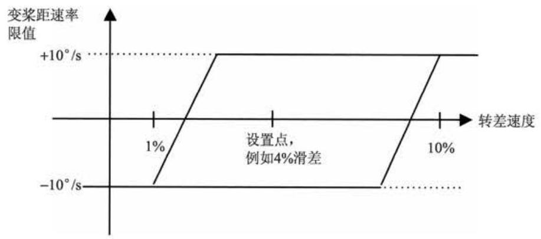
图 8.17 一个可变滑差控制器中变桨距速率限制的调整
另一种给定值改变的情况是在风速较高时, 阻止由于强风引起的开孔导致能量的意外损耗。如果风速的增加能够导致所有的风电机组在大型风电场中在很短的时间内突然停机，网络将会通过提供热备用容量对其进行处理。缓慢平滑地使电源输出从全功率降低至 0 , 而不是以 \({25}\mathrm{\;m}/\mathrm{s}\) 的速度突然停机,也就是说, \({24}\mathrm{\;m}/\mathrm{s}\) 或者 \({35}\mathrm{\;m}/\mathrm{s}\) 将会导致突然降低的可能性很小,而且风电场的输出可被认为是具有预测性的(Bossanyi, 1982), 这两个影响都会导致更低的备用容量需求, 因此, 产生的能量值会更高。这对于疲劳载荷跟能量输出的影响很小, 因为所涉及的时间很短, 但是对于负载极限值具有一定的影响需要加以考虑。对于海上风电机组来说, 如果风电机组正在运行，运行范围扩展至更高风速，有助于降低塔尖负载，波激塔尖振动阻尼会被更好地衰减(Markou 等，2009)。
8.4.5 最优化反馈方法¶
以上描述的控制器设计方法是基于经典的设计方法, 并且通常会产生相应的简单 PI 或 PID 控制算法, 其中还结合有各种串联或并联的滤波器。例如, 相移、陷频滤波器或带通滤波器, 并且有时会使用辅助的传感器输入。这些方法可以用来设计复杂的高阶控制器, 但是只有部分控制器经验可以供设计者参考。
目前, 有大量的理论与先进控制器设计方法相关 (实际上, 只有一小部分理论被应用)。在这些先进的控制器设计方法中，一些已经被研究用于风力发电机组的控制, 如:
(1)自调整控制器。
(2)LQG模式基于最优化反馈和 \({H}_{\infty }\) 控制方法。
(3)模糊控制器。
(4)神经网络方法。
自调整控制器 (Clarke 和 Gawthrop, 1975) 通常是一个由因子集决定的固定阶次控制器, 这些因子是基于一个系统的线性化经验模型。这个模型用来对传感器的测量进行预测, 并且预测的误差被用来对模型和反馈定律的因子进行修正。
如果系统的动态特性是已知的, 就可以通过不同的方法使用一些很相似的数学理论。不同于拟合经验模型, 使用线性化的物理模型来对传感器输出进行预测, 并且预测误差被用来修正系统状态变量的变化。这些变量可能包含旋转速度、转矩、偏差等。就像实际的风速一样, 它们的值可以用来计算近似的控制行为, 即使这些特殊的变量可能并没有经过实际测量。
1 观测器¶
已知动态过程的子集可以用来估计一个特定的变量。例如, 一些控制器使用风速观测器来估计由功率和(或)转速及桨距角测量得到的叶轮处的风速。这个估计的风速可以用来定义近似期望的桨距角。
2 状态估计器¶
使用一个动态过程的全部模型, 通过卡尔曼滤波器可以从预测误差中对系统的所有状态量进行估计 (Bossanyi, 1987)。这种方法可以明确地利用动态特性的任何随机变化的信息, 如测量信号中的噪声, 并通过数学上的最优化方法来得到最好的状态估计。这和随机输入信号的高斯特性是相关的。因此, 可以在高斯输入的基础上建立风速模型，这样就有可能详细地研究输入风力的随机特性，甚至可以拓展为包含叶片穿越效应。
卡尔曼滤波器可以毫无困难地考虑多于一个的传感器输入来生成最佳的状态观测。因此，像通常的功率和速度传感器一样，用卡尔曼滤波器来测量塔架前后摆动的加速度是非常理想的。如果可能的话，还可以增加其他的传感器，这将进一步改善对于状态变量的估计。
3 最优化反馈¶
在状态估算器已知之后, 就可以定义一个成本函数, 这是一个系统状态和控制行为的函数。这个控制器目标可以数学化, 其目标是使被选择的成本函数最小化, 如果成本函数被定义为状态量和控制动作的二次函数(通常，在实际中会是更简单的公式), 那么这就和计算最优反馈法则直接相关。其被定义为反馈定律, 它是状态量的线性组合, 并且会产生控制信号使成本函数最小化。由于这种控制器要求一个线性化的模型, 并且具有一个二次形式的成本函数和高斯分布, 因此, 这种控制器被称为 LQC 控制器。
成本函数的方法意味着通过为其选择合适的权重, 就可以明确定义一些局部竞争目标之间的交替。对于控制器来说, 如果既要减小载荷, 又要实现对功率和速度的控制功能, 则成本函数不失为一个理想的方法。尽管对于成本函数权重的严格计算是不现实的, 但可以从直观上来调整其大小。这种方法也可以很容易地用来配置多输入、多输出的情况。例如, 就像使用发电机速度和塔架的加速度输入, 这在原则上将同时产生桨距角和转矩要求的输出, 这个输出会使成本函数最小。
图 8.18 是 LQG 控制器的结构。图 8.18 中显示了状态观测器和最优的状态反馈。在实现中,整个控制器可以被简化为和控制信号 \(\left( u\right)\) 及测量输出信号 \(\left( y\right)\) 相关联的差分方程的形式。这表示一旦完成了设计, 这个算法就可以很容易实现且不需要大量的计算。
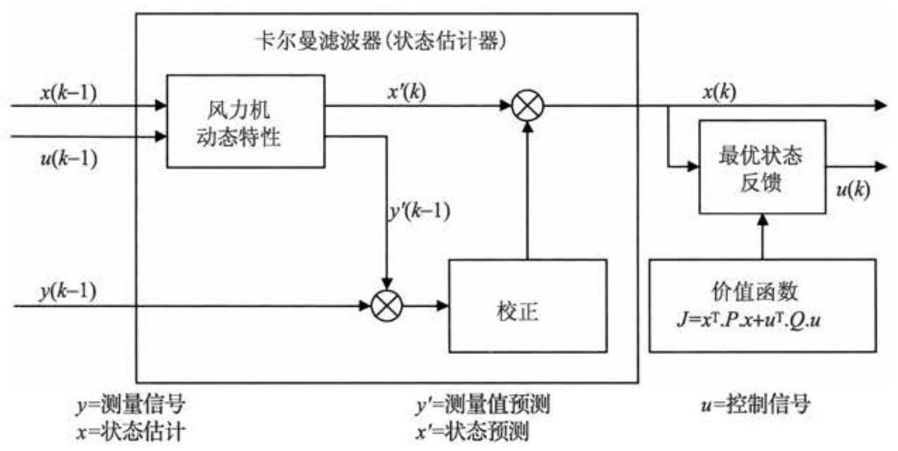
图 8.18 LQG 控制器结构
系统的动态线性化可以被表示为离散的状态空间形式如下:
卡尔曼增益 \(L\) 被用来计算随机干扰对系统的影响。通过对比传感器预测输出 \({y}^{\prime }\) 和实际输出 \(y\) 可以对状态观测器进行改进。
其中
优化的状态反馈增益 \(k\) 产生控制动作
其中, \(k\) 使二次成本函数 \(J\) 最小,成本函数为
\(P\) 和 \(Q\) 是状态和控制权重矩阵。通常,用其他的量来定义成本函数会更加有效。 例如, \(v\) ,它可以被考虑为系统的附加输出 (通常是未被测量的):
因此, 成本函数为
这样,
另一个可能性是使用传感器输出的函数直接来得到优化的控制信号, 这被称为优化输出反馈 (Steinbuch, 1989)。尽管如此, 这个问题精确的解是基于最优化的必要条件，而这些条件通常是不充分的。因此，在实际中，生成的解可以是且经常是非优化的, 并且它可能远离最优解。这种差异因此成了一个很大的问题。
到目前为止, 商业化运行的风力发电机组中, 实际采用类似 LQG 这样先进控制算法的机组几乎没有, 但是随着风力发电机组的日益增大, 对控制器的要求也越来越高, 上述先进控制算法的应用也会逐渐增多。不管怎样, 这种方法于 1992 年在英国被用于设计了一个 300kW 恒速双叶片偏航对风型风力发电机组的控制器。 对于风电领域一个原型机的测试显示, 这种控制器与 PI 控制器相比会明显降低桨距动作和功率偏差, 因此, 以后的风力发电机组生产中采纳了这种方法, 并成功地应用于超过 70 台风力发电机组上。Stol 等(2004)报告了一个测试，在一个实验用的 600kW 的风力机上采用了类似的控制方法。
LQC 控制器的鲁棒性不是必要的, 这意味着它们在风力发电机组模型中的误差具有敏感性。类似的方法还有 \({H}_{\infty }\) 控制器,它可以明确地考虑风力发电机组和风力模型的不确定性。Knudsen 等在 1997 年对这种控制器的性能进行了评估, 他们评估的对象是一台 \({400}\mathrm{\;{kW}}\) 恒速变桨距风力发电机组。评估报告表明,与 PI 控制器相比，这种控制方法可以减少变桨距动作并有可能减小疲劳载荷。
8.4.6 基于模型控制方法的利弊¶
8.4.5 节中所提到的方法很有意思, 这是用严谨的数学计算出一个“最佳”的控制器, 它最小化了预定义值和合理直观的成本函数, 这表明调整过程研究需要一个自动的过程, 而传统的方法每个新的调整都依赖于设计者的技术和经验。对于设计 MIMO 控制器来说, 它们仍然是最理想的, 因为使用传统的设计方法需要进行繁琐的迭代方法。然而, 也存在一些不足, 这也许可以解释传统设计的控制器在商业风电机组的应用比较普遍。
实际上，“调整”成本函数可能最终跟调整一个传统的控制器一样困难，这种调整可能需要在每一个新风力机上重复进行，即使原则上是没有必要的。成本函数需要最小化任意一级或者输出, 然而, 这些变量的选择不像看起来那么简单。例如, 对于变速控制器来说, 逻辑上, 它将需要一项来尽量减小速度误差, 但实际上, 还需要一项来尽量减少速度误差的积分，并且调节这两项之间的相对权重至非常类似在传统的设计中来调节比例和积分增益。
成本函数也可被定义为状态和其他变量的二次函数, 对于最小化疲劳载荷来说, 这种方法不是很合适, 例如疲劳情况是高度非线性的过程。即使对调速来说, 有人可能会说速度误差最小化意义不大(甚至会否定最小化负载的必要)，反而认为最小化极限速度便可避免超速的发生才是十分重要的。二次成本函数来描述并不是很理想的，因为真正的“成本”在超速跳闸极限会大幅度增加。
经典控制器实行起来比较容易, 可通过如增益调度等方法很容易地解决非线性情况, 同时还可进行简单的调节, 如因为实行固定或浮动可变速率限制, 可以直接增加陷波滤波器。基于模型的控制器需要进一步复杂化, 如利用增强的 Kalman 滤波器或者模糊转换函数来处理其非线性化, 并且任何改变需要重新对控制器进行完整的计算。集成监控系统更加简单，如可能在关机时需要修改塔架加速度反馈或独立桨距控制以降低极限载荷。在传统控制器中加入可变的计划值或者极限值很容易实现,但基于模型控制器则很难实现。
如 8.3.10 节所描述的那样, 大多数的风力机控制问题都能被分解为单个的问题, 对于非耦合的 SISO 回路也大概如此。这使得直接使用经典的转换技术是完全可行的。唯一值得注意的是速度调节回路与塔架阻尼之间的耦合，但是这很容易通过一两次迭代进行处理, 通过其他回路的运行来自行调节每个循环回路, 其中这些其他回路是作为整个循环的一部分。
然而, 当风电机组比逐渐变大、变轻、变灵活时, 基于模型的多变量方法或结合额外的传感器就会越来越重要。
8.4.7 其他方法¶
在系统动态特性未知或它们包含严重的非线性时, 基于规则或模糊逻辑的控制器就会发挥作用。对于应用于被测信号的一套规则, 通过衡量其输出可以计算并产生控制动作。尽管现在对于模糊控制器应用于风力发电机组已经作了相关的研究,但是在实际效果上并没有明显的改善。在实际中,通常可以得到很多的系统动态特性的信息,并且在每个运行点上可以对动态特性进行合理的线性化处理。 所以, 现在对这样一种方法的研究并没有明确的目的。
对基于神经网络的控制器也是一样的。这些是学习算法, 即通过使用一些特殊的条件对控制器进行培训, 从而产生合适的控制动作, 并将学会的控制行为作为通用的控制算法。虽然这是一种很有潜力的强大算法, 但是很难确保这样的控制器能够对所有的情况都产生可靠的控制动作。
然而, 以上两种方法对包含明显的非线性和非静止动态特性的系统可能会有应用潜力。这些非线性和非静止的动态特性可能存在于风力发电机组本身(如失速滞后现象)、传动干扰(风力特性并不是静止的)或是控制器本身。例如，控制器本身可能会在额定风速附近发生改变，或者在成本函数中会包含类似于疲劳损伤的非线性效应。
8.5 变桨距执行机构¶
变桨距风力发电机组控制系统中的重要组成部分是变桨距执行机构。通常采用液压执行机构和电动执行机构, 在设计阶段, 通常需要考虑每种类型本身所特有的优点和缺点。
容量较小的风力发电机组通常会使用统一的变桨距执行机构来同时控制所有的桨叶，然而，每个桨叶采用独立的变桨距执行机构配置较大容量的风力发电机组已经成为发展趋势。它的优势在于可能会取代原本需要的大型且昂贵的刹车系统。这是由于一台风力发电机组至少需要两个独立的刹车系统, 在一旦发生故障的情况下, 刹车系统能使风力发电机组从满载过渡到安全的状态。假如独立变桨距执行机构可以做到独立的失效安全,并且只要气动刹车转矩足够大就可以将叶轮转速降低到安全速度，即使是当其中一个变桨距执行机构在调整桨距角时发生失效的时候。为了达到这个目的，多个变桨距执行机构可以被认为是独立的刹车系统。即便是这样也可能会需要停机刹车装置，至少要满足维护人员的使用要求， 但是该装置可以做得很小。它至少要具有使叶轮从低速到完全停止的能力, 并不需要在较高或极限风速上做到这一点, 这样为插入叶轮锁定装置争取了更长的时间来插入叶轮锁定装置。
完整的变桨距执行机构通常包括在机舱内的电动或液压的执行机构，去驱动穿过齿轮箱和主轴中心的变桨行程杆。变桨行程杆在轮毂的机械空间中连接于变桨距叶片的根部。机舱中的执行机构通常是简单的液压缸和活塞。充满的液压蓄能器在液压泵掉电的时候也能够确保叶片处于顺桨状态。另外一种变桨距执行机构是使用伺服电动机来驱动固定在行程推杆上的与球形螺栓相啮合的球形螺母。 因为变桨距行程杆随叶轮旋转, 电动机掉电引起球形螺栓调整桨距角为顺桨状态, 这样会使桨叶处于失效安全状态。同时,需要在伺服电动机上安装失效安全刹车来确保在掉电情况下球形螺母停止转动。
独立变桨距控制要求在轮毂里的每个桨叶都有各自的执行机构, 因此, 必须有办法向旋转的轮毂输送电力来驱动执行机构。在电气执行机构的情况时, 可以通过滑环来做到这一点, 或者对于液压执行机构来说, 使用旋转的液压连接体。旋转变压器也可以被用来传送电力到轮毂, 这样就省去了因经常需要维护滑环而带来的不方便。
在轮毂里配置备用电源能够实现桨叶的变桨距控制, 同时能够确保一旦电源发生故障仍然能够保证系统正常工作。液压系统对于每个叶片来说都需要一个蓄能器, 而电动执行机构通常在轮毂里备有蓄电池组。这样的蓄电池组通常是体积大、质量大且昂贵，目前已经设想了一些替代方法来解决这个问题，如在轮毂上安装发电机, 只要轮毂旋转就可以持续地产生电力。如果使用蓄电池的话, 则执行机构的电动机必须是直流电动机或是带有变频器的交流电动机(更普遍)，其中交流电动机是以蓄电池作为直流母线的。因为这会成为安全系统的一个部分，所以在直流母线和变桨电动机之间的逆变器的可靠性就很重要了。安装在轮毂上的发电机可以产生直流电或是变频的交流电，并且和变桨电动机之间连接的可靠性同等重要。因为变桨距执行机构必须要独立地做到失效安全，必须为每个叶片提供独立的蓄电池组或发电机和变频器等。
变桨距轴承的摩擦通常是设计变桨距控制系统的重要因素。轴承的摩擦取决于轴承上的载荷，并且轴承上较大的滚动运动会产生很强的摩擦。
液压执行机构通常采取控制比例阀的手段来控制流向执行机构柱面的液压油以达到控制的目的。在液压阀打开的时候，液压油流动速率会被设置为与要求的变桨距速度成一定的比例。这种要求的变桨距速率可能会直接从风力发电机组控制器那里得到, 或者从一个变桨距位置反馈环中得到。在这种情况下, 风力发电机组控制器生成了一个要求的变桨距位置控制信号。与测量所得到的变桨距位置相比, 位置误差信号通过快速 PI 或 PID 控制环被转换为变桨距速率而被给定, 通常是通过数字或是简单的模拟电路手段来实现。
在使用电动执行机构的情况下, 电动机的控制器通常需要一个转矩给定信号。 这个信号通常由一个速度控制器给出, 速度传感器将速度误差经过一个快速 PI 或 PID 控制器之后得到了转矩给定信号, 而速度给定信号可以直接从风力发电机组控制器得到或是从一个位置反馈环中得到。
有时会使用简单的执行机构, 特别是在不需要太快的变桨距响应的情况下, 就像在风力发电机组通常通过变桨距控制桨叶失速而非顺桨的时候。在这种情况下，变桨距执行机构仅仅需要在每个方向上以固定的速率来控制变桨就足够了。
8.6 控制系统的实现¶
前面的章节解释了一些设计控制算法可以用到的技术。系统和控制器的动态特性在连续时域内通过拉普拉斯算子 \(s\) 的形式来描述。相对于可以使用的,如模拟电路来实现连续时间控制器的方法, 现在几乎普遍使用数字控制器。数字系统强大的灵活性在于这样的一个因素, 仅仅通过改变软件上的设置就可以完全改变控制逻辑。
使用数字控制器的结果是控制动作的计算和更新不是连续地进行, 而是在一个离散的时间间隔内完成。在连续时间系统下设计的控制算法为了在数字控制器上实现必须要将其转换为离散时间。如果风力发电机组线性化模型首先是离散化的,那么就可以在离散时间系统内设计控制器。
下面的章节简要描述了一些在真正的数字控制器中实现控制算法过程中遇到的实际问题。另外, 读者可以参考标准控制理论的文章来获得更详细的信息。
8.6.1 离散化¶
考虑到一个被设计为传递函数形式的连续域中的控制算法 [式 (8.1) 形式的 PID控制器], 在将其应用到数字控制器之前必须要进行离散化。离散化的变换函数通常表示为延迟算子 \(z\) 的形式，其中 \({z}^{-k}x\) 表示为 \(k\) 次采样之前的 \(x\) 的值。以采样为例，一个从 \(x\) 到 \(y\) 的平均移动或是延迟滤波器通常被实现为
这是一个可以稳定地以代码形式在离散控制器中实现的差分方程。以延迟算子的形式, 它可以被重新写为
或者以 \({z}^{-1}\) 的多项式的传递函数的形式组成
现在，拉普拉斯算子可以被考虑为差分算子，并且对其进行一个简单的近似， 可以通过用 \(\left( {1 - {z}^{-1}}\right) /T\) 替换 \(s\) 来实现从连续传递函数到离散形式的变换，其中 \(T\) 是时间步长。
实际上，对于简单的代数运算，通过这个替换可以明显看到，上面的离散传递函数实际上等效于一个带有时间常数 \(\tau\) 的一阶滞后环节的连续传递函数，即
其中, \(F\) 由 \(\tau /\left( {T + \tau }\right)\) 给出。
很清楚, 任何离散方程都只能够是连续时间的近似。这里也有其他的离散化方法, 叫做双线性变化, 通常, 它在实际中工作得更好。在这种情况下, 拉普拉斯算子被替换为
和时间连续过程相比, 离散化会导致一个相移。这个相移会随着频率的增加而增加。如果这个算法的结果在某个特定频率下对于相移很敏感, 那么离散化就需要对频率进行预先的“移相”。移相会预先对离散化的传递函数在特性频率下的相位进行修正, 但是在更高或更低的频率上会产生偏移。一个预先移相的很重要的例子是在变速风力发电机组中的传动链共振阻尼 (见 8.3.6 节), 共振频率通常被设定得非常高,典型的大约为 4Hz,除非控制器的时间步长非常短,否则由离散化引起的相移会对阻尼算法结果产生很大的影响。
对于频率 \(\omega\) 具有预先移相的用于离散化 \(s\) 的近似方法为
8.6.2 抗积分饱和¶
诸如 PI 或 PID 控制器, 这种包含有积分项的控制器遇到的问题, 是存在积分饱和的问题。一个普通的例子是在变桨距控制中, 其中桨距角在风速低于额定值的时候被限制在了一个合适的变桨距位置上。例如,一个用于恒速风力发电机组的 PI 功率控制器可以被表示为在额定值以上的时候, 由于积分项的存在功率误差在平均值上会为 0 。在额定值以下的时候, 积分器会在合适的变桨距位置饱和, 并且功率误差会保持为一个负值。对于误差的积分也会因此而变得越来越小, 只有应用限制才能阻止实际的变桨距这样运行。尽管如此, 当风速再次达到额定值且功率误差为正时, 对于功率误差积分器来说需要很长的时间来恢复到为 0 的状态, 并且进一步地变为正的给定桨距角。为了防止出现积分器饱和的问题, 当变桨距达到了限定值的时候,积分项必须停止积分。通过从剩余控制器 \(R\left( z\right)\) 中分离积分器 \(I\left( z\right)\) 可以很容易实现这一点。 \(R\left( z\right)\) 产生了给定桨距角的修正项,并且 \(I\left( z\right)\) 通过在应用限幅之后在前面的桨距角给定值中加入它进行了积分。
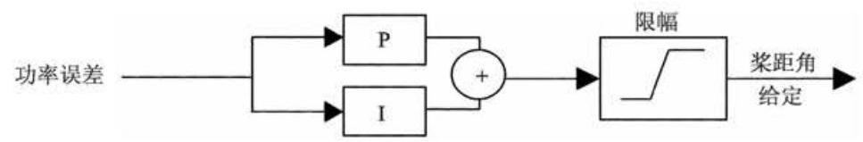
例如,一个使用了双线性变换进行离散化的 \(\mathrm{{PI}}\) 控制器近似为
为了避免积分器饱和, 可以按照以下的方法来实现:
\({y}_{k}^{ * } = {y}_{k - 1} + \Delta {y}_{k}\) [积分器 \(I\left( z\right)\) 使用前面的输出限制]
\({y}_{k} = \lim \left( {y}_{k}^{ * }\right)\) (限幅值应用)
更高阶的控制器需要更复杂的抗积分饱和技术。
参考文献¶
Anderson, B.D.O. and Moore, J.B. (1979) Optimal Filtering. Prentice-Hall, London.
Astrom, K.J. and Wittenmark, B. (1990) Computer-Controlled Systems. Prentice-Hall, London.
Bossanyi, E.A. (1982) Probabilities of sudden drop in power from a wind turbine cluster. \({4}^{\text{ th }}\) International Symposium on Wind Energy Systems, September 21-24. BHRA Fluid Engineering, Cranfield.
Bossanyi, E.A. (1987) Adaptive pitch control for a \({250}\mathrm{\;{kW}}\) wind turbine. In: The Proceedings of the \({9}^{\text{ th }}\) BWEA Conference, pp. 85-92. Mechanical Engineering Publications, Edinburgh.
Bossanyi, E.A. and Gamble, C.R. (1991) Investigation of torque control using a variable slip induction generator. ETSU WN-6018, Energy Technology Support Unit, Harwell.
Bossanyi, E.A. (1994) Electrical aspects of variable speed operation of horizontal axis wind turbine generators. ETSU W/33/00221/REP, Energy Technology Support Unit, Harwell.
Bossanyi, E.A. (2000) Developments in closed loop controller design for wind turbines. Proceedings of the 2000 ASME Wind Energy Symposium. AIAA/ASME, Reno, Nevada.
Bossanyi, E.A. (2003) Individual blade pitch control for load reduction. Wind Energy 6(2), 119-128.
Bossanyi, E.A. (2004) Developments in Individual Blade Pitch Control. EWEA conference 'The Science of making Torque from Wind', Delft University of Technology.
Bossanyi, E.A. and Wright, A. (2009) Field testing of individual pitch control. Proceedings of the European Wind Energy Conference. European Wind Energy Association, Marseille.
Bossanyi, E.A., Wright, A. and Fleming, P. (2010) Progress with field testing of individual pitch control. EWEA conference "The Science of making Torque from Wind', June 28-30, Heraklion.
Caselitz, P., Kleinkauf, W., Krüger, T., Petschenka, J., Reichardt, M. and Störzel, K. (1997) Reduction of fatigue loads on wind energy converters by advanced control methods. In: Proceedings of the European Wind Energy Conference, October, pp. 555-558. European Wind Energy Association, Dublin.
Clarke, D. and Gawthrop, P. (1975) Self-tuning controller. In Proceedings IEE 122, No. 9, pp. 929-934
D'Azzo, J.J. and Houpis, C.H. (1981) Linear Control System Analysis and Design. McGraw-Hill, London.
Donham and Heimbold (1979) Wind turbine. United States Patent 4,297,076, 1981(Filed 8 June 1979).
van Engelen, T. and van der Hooft, E. (2005) Individual pitch control inventory. ECN-C-03-138.
Fischer, T., Rainey, P., Bossanyi, E. and Kühn, M. (2010) Control strategies for an offshore wind turbine on a monopile under misaligned wind and wave loading. EWEA conference 'The Science of making Torque from Wind', June 28-30, Heraklion.
Holley, W., Rock, S. and Chaney, K. (1999) Control of variable speed wind turbines below rated wind speed. Proceedings of the \({3}^{\text{ rd }}\) ASME/JSME Conference, California.
Knudsen, T., Andersen, P. and Töffner-Clausen, S. (1997) Comparing PI and robust pitch controllers on a 400 kW wind turbine by full-scale tests. In: Proceedings of the European Wind Energy Conference, October, pp. 546-550. European Wind Energy Association, Dublin.
Markou, H. and Larsen, T.J. (2009) Control Strategies for operation of pitch regulated turbines above cut-out wind speeds. PO216, Proceedings of the European Wind Energy Conference. European Wind Energy Association, Marseille.
Namik, H. and Stol, K. (2010) Individual blade pitch control of floating offshore wind turbines, Wind Energy, 13, 74-85.
Park, R.H. (1929) Two-reaction theory of synchronous machines, Trans. AIEE, 48.
Pedersen, T.K. (1995) Semi-variable speed - a compromise? In: Wind Energy Conversion 1995, Proceedings of the \({17}^{\text{ th }}\) British Wind Energy Association Conference, Warwick, pp. 249-260. Mechanical Engineering Publications.
Ramtharan, G., Jenkins, N., Anaya-Lara, O. and Bossanyi, E. (2007) Influence of rotor structural dynamics representations on the electrical transient performance of FSIG and DFIG wind turbines, Wind Energy, 10(4), 293-301.
Rossetti, M. and Bossanyi, E.A. (2004) Damping of Tower Motions via Pitch Control - Theory and Practice. Proceedings of the 2004 European Wind Energy Conference. EWEA.
Savini, B. and Bossanyi, E. (2010) Supervisory Control Logic Design for Individual Pitch Control. PO243, Proceedings of the 2010 European Wind Energy Conference. EWEA.
Schlipf, D., Fischer, T., Carcangiu, C.E., Rossetti, M. and Bossanyi, E. (2010) Load analysis of lookahead collective pitch control using lidar. Proceedings of the DEWEK conference, Bremen (DEWI).
Steinbuch, M. (1989) Dynamic modelling and robust control of a wind energy conversion system. PhD thesis, University of Delft.
Stol, K. and Fingersh, L. (2004) Wind turbine field testing of state-space controller designs. NREL/SR- 500-35061, National Renewable Energy Laboratory.